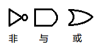

Part II
样本类和模式匹配
样本类（case class）和模式匹配（pattern matching）。
简单的例子
假设要建立一个操作数学表达式的库，就要先定义输入的数据。为了简单，现在只关注由变量、数字、一元及二元操作符组成的数学表达式上：
样本类
带case修饰符会被编译器识别为样本类。
abstract class Expr
case class Var(name: String) extends Expr
case class Number(num: Double) extends Expr
case class UnOp(operator: String, arg: Expr) extends Expr
case class BinOp(operator: String,
left: Expr, right: Expr) extends Expr
上面为表达式定义了一个抽象的基类，四个子类分别代表四种具体的表达式。要注意的是每个子类都有一个case修饰符，会被编译器识别为样本类。
样本类有自动产生的工厂方法，创建时就用不着new了：
val v = Var("x")
这个特点让方法在有很多层嵌套时可以少写很多new，这样让代码看起来更加简洁：
val op = binOp("+", Number(1), v)
样本类的另一个特点是参数列表中所有的参数隐式获得了val前缀，被作为字段维护：
scala> v.name res0: String = x scala> op.left res1: Expr = Number(1.0)
编译器为样本类添加了可读性更强的toString方法；还有自动提供的hashCode和equals方法会树型嵌套作用于成员变量：
scala> println(op)
BinOp(+,Number(1.0),Var(x))
scala> op.right == Var("x")
res3: Boolean = true
模式匹配
先来看一下格式。在格式上相当于把Java的switch格式：
switch (selector) { alternatives }
中括号里的选择器移到了match关键字的前面：
selector match { alternatives }
有一些数学运算的值是固定的，所以可以直接写死，算都不用算。比如以下的三个：
UnOp("-", UnOp("-", e)) => e // 负负得正
BinOp("+", e, Number(0)) => e // 加0
BinOp("*", e, Number(1)) => e // 乘1
定义一个simplifyTop来简化运算：
def simplifyTop(expr: Expr): Expr = expr match {
case UnOp("-", UnOp("-", e)) => e // Double negation
case BinOp("+", e, Number(0)) => e // Adding zero
case BinOp("*", e, Number(1)) => e // Multiplying by one
case _ => expr
}
方法simplifyTop接收一个Expr类型的参数。这里参数expr作为选择器匹配各个备选项，_为通配模式能匹配所有的值，相当于Java中的default。箭头=>分开的模式与表达式。
-
其中
"-"、"*"、"*"等这样的是常量模式（constant pattern）作相等判断。 -
其中的
e这样的变量模式（variable pattern）匹配所有的值，在=>右边可以操作匹配的部分内容。 -
其中
Unop("-",e)这样的形式为构造器模式，这样匹配的条件就是类为Unop第一个参数是"-"，第二个参数被作为e捕获。
调用：
scala> simplifyTop(UnOp("-", UnOp("-", Var("x"))))
res4: Expr = Var(x)
match与switch的比较
-
match是一种表达式，所以有返回结果。 - 一个case不会走到下一个case。
-
如果一项也没有匹配成功，会抛出
MatchError异常。如果不想要异常要么把所有可能性都写上；要么加一个_的默认情况。
expr match {
case BinOp(op, left, right) =>
println(expr +" is a binary operation")
case _ =>
}
这个表达式在两种情况下都会返回Unit值()，所以这个表达式的类型就是Unit。
模式的种类
通配模式
通配模式“_”匹配所有的结果：
expr match {
case BinOp(op, left, right) =>
println(expr +"is a binary operation")
case _ =>
}
通配符还可以省略省略不用关注的内容。比如只要是BinOp类型就行，里面的参数是什么值不关心：
expr match {
case BinOp(_, _, _) => println(expr +"is a binary operation")
case _ => println("It's something else")
}
常量模式
任何字面量都可以用作常量，还有val与单例对象也可以。如nil，5，true和"hello"：
def describe(x: Any) = x match {
case 5 => "five"
case true => "truth"
case "hello" => "hi!"
case Nil => "the empty list"
case _ => "something else"
}
效果：
scala> describe(5)
res5: java.lang.String = five
scala> describe(true)
res6: java.lang.String = truth
scala> describe("hello")
res7: java.lang.String = hi!
scala> describe(Nil)
res8: java.lang.String = the empty list
scala> describe(List(1,2,3))
res9: java.lang.String = something else
变量模式
变量类似通配模式，只不过有个变量名所以可以在后面的表达式中操作这个变量：
expr match {
case 0 => "zero"
case somethingElse => "not zero: "+ somethingElse
}
变量模式与常量模式的区别
常量不止有字面形式，还有用符号名的（比如Nil）。这样看起来就很容易与变量模式搞混：
scala> import Math.{E, Pi}
import Math.{E, Pi}
scala> E match {
| case Pi => "strange math? Pi = "+ Pi
| case _ => "OK"
| }
res10: java.lang.String = OK
上面的E与Pi都是常量。对Scala编译器来说小写字母开头都作为变量，其他引用被认为是常量。下面的例子中想建立一个小写的pi就匹配到常量Pi了：
scala> val pi = Math.Pi
pi: Double = 3.141592653589793
scala> E match {
| case pi => "strange math? Pi = "+ pi
| }
res11: java.lang.String = strange math? Pi = 2.7182818...
在这个变量模式情况下，不能使用通配模式。因为变量模式已经可以匹配所有情况了：
scala> E match {
| case pi => "strange math? Pi = "+ pi
| case _ => "OK"
| }
<console>:9: error: unreachable code
case _ => "OK"
^
其实也有强制使用小写常量名的方式：this.pi或obj.pi的形式表示是常量模式；如果这样还没有用，可以用反引号包起来，如：
scala> E match {
| case `pi` => "strange math? Pi = "+ pi
| case _ => "OK"
| }
res13: java.lang.String = OK
反引号也可以用来处理其他的编码问题，如对于标识符来说，因为yield是Scala的保留字
所以不能写Thread.yield()，但可以写成：
Thread.`yield`()
这样这里的yield就被当作标识符而不是关键字了。
构造器模式
这个模式是真正牛X的模式，不仅检查对象是否是样本类的成员，还检查对象的构造器参数是否符合指定模式。
Scala的模式支持深度匹配（deep match）。不止检查对象是否一致而且还检查对象的内容是否匹配内层模式。由于额外的模式自身可以形成构造器模式，因此可以检查到对象内部的任意深度。
如下面的代码不仅检查了顶层的对象是BinOp，而且第三个构造参数是Number，而且它的值为0：
expr match {
case BinOp("+", e, Number(0)) => println("a deep match")
case _ =>
}
序列模式
指定匹配序列中任意元素，如指定开始为0：
expr match {
case List(0, _, _) => println("found it")
case _ =>
}
不固定长度用_*：
expr match {
case List(0, _*) => println("found it")
case _ =>
}
元组模式
检查参数是不是三元组：
def tupleDemo(expr: Any) =
expr match {
case (a, b, c) => println("matched "+ a + b + c)
case _ =>
}
调用：
scala> tupleDemo(("a ", 3, "-tuple"))
matched a 3-tuple
类型模式
这个模式可以被用来当成类型测试和类型转换的简易替代：
def generalSize(x: Any) = x match {
case s: String => s.length
case m: Map[_, _] => m.size
case _ => -1
}
调用的例子：
scala> generalSize("abc")
res14: Int = 3
scala> generalSize(Map(1 -> 'a', 2 -> 'b'))
res15: Int = 2
scala> generalSize(Math.Pi)
res16: Int = -1
注意方法中s和x虽然都指向同一个对象，但一个类型是String一个类型是Any。所以可以写成s.length不可以写成x.length。
另一个测试类型的方法：
expr.isInstanceOf[String]
另一个转换类型的方法：
expr.asInstanceOf[String]
使用类型转换的例子：
if (x.isInstanceOf[String]) {
val s = x.asInstanceOf[String]
s.length
} else ...
类型擦除
和Java一样，对于除了数组以外其他集合都采用了泛型擦除（erasure）。就是在运行时不知道集合泛型类型。
如对于Map[Int,Int]，到了运行时就不知道两个类型是什么类型了。所以对于泛型的模式匹配，编译器会有警告信息：
scala> def isIntIntMap(x: Any) = x match {
| case m: Map[Int, Int] => true
| case _ => false
| }
warning: there were unchecked warnings; re-run with
-unchecked for details
isIntIntMap: (Any)Boolean
在启动编译器时加上检查开关-unchecked可以看到更多详细信息：
scala> :quit
$ scala -unchecked
Welcome to Scala version 2.7.2
(Java HotSpot(TM) Client VM, Java 1.5.0_13).
Type in expressions to have them evaluated.
Type :help for more information.
scala> def isIntIntMap(x: Any) = x match {
| case m: Map[Int, Int] => true
| case _ => false
| }
<console>:5: warning: non variable type-argument Int in
type pattern is unchecked since it is eliminated by erasure
case m: Map[Int, Int] => true
^
所以对于不同的类型，上面函数结果都是true：
scala> isIntIntMap(Map(1 -> 1))
res17: Boolean = true
scala> isIntIntMap(Map("abc" -> "abc"))
res18: Boolean = true
数组和Java一样，是没有类型擦除的：
scala> def isStringArray(x: Any) = x match {
| case a: Array[String] => "yes"
| case _ => "no"
| }
isStringArray: (Any)java.lang.String
scala> val as = Array("abc")
as: Array[java.lang.String] = Array(abc)
scala> isStringArray(as)
res19: java.lang.String = yes
scala> val ai = Array(1, 2, 3)
ai: Array[Int] = Array(1, 2, 3)
scala> isStringArray(ai)
res20: java.lang.String = no
变量绑定
在变量模式里可以用变量操作匹配的部分，那么其他的模式里有没有办法也这样做呢？
其实除了变量模式外，也可以对任何其他模式添加变量。 作用时在匹配成功后，变量就是匹配成功的对象了。 方式为写上变量名、一个@符号和模式。
比如要匹配abs出现了两次的地方（做了两次绝对值计算等于没有算）：
expr match {
case UnOp("abs", e @ UnOp("abs", _)) => e
case _ =>
}
这里的e代表的就是UnOp("abs",_)部分。
守卫模式
如，想要把e+e这个重复加法替换成乘法e*2：
BinOp("+", Var("x"), Var("x"))
等于：
BinOp("*", Var("x"), Number(2))
Scala要求模式是线性的，即模式变量只能在模式中出现一次。下面的表达式中x重复出现了，所以有问题：
scala> def simplifyAdd(e: Expr) = e match {
| case BinOp("+", x, x) => BinOp("*", x, Number(2))
| case _ => e
| }
<console>:10: error: x is already defined as value x
case BinOp("+", x, x) => BinOp("*", x, Number(2))
^
守卫模式（pattern guard）很像for循环中的if过滤条件。接在匹配模式后面的、用if开始的、使用模式中变量的表达式。
如下面例子中的if x == y部分：
scala> def simplifyAdd(e: Expr) = e match {
| case BinOp("+", x, y) if x == y =>
| BinOp("*", x, Number(2))
| case _ => e
| }
simplifyAdd: (Expr)Expr
其他的例子，如只匹配正整数和只匹配以a开始的字符串：
// match only positive integers case n: Int if 0 < n => ... // match only strings starting with the letter `a' case s: String if s(0) == 'a' => ...
模式重叠
def simplifyAll(expr: Expr): Expr = expr match {
case UnOp("-", UnOp("-", e)) =>
simplifyAll(e) // `-' is its own inverse
case BinOp("+", e, Number(0)) =>
simplifyAll(e) // `0' is a neutral element for `+'
case BinOp("*", e, Number(1)) =>
simplifyAll(e) // `1' is a neutral element for `*'
case UnOp(op, e) =>
UnOp(op, simplifyAll(e))
case BinOp(op, l, r) =>
BinOp(op, simplifyAll(l), simplifyAll(r))
case _ => expr
}
注意这个方法的第四个和第五个匹配样本的参数都是变量，而且对应的操作采用递归。因为四和五的匹配范围比前三个更加广，所以建立放在后面。如果放在前面的话会有警告。
如下面的第一个样本能匹配任何第二个样本能匹配的情况：
scala> def simplifyBad(expr: Expr): Expr = expr match {
| case UnOp(op, e) => UnOp(op, simplifyBad(e))
| case UnOp("-", UnOp("-", e)) => e
| }
<console>:17: error: unreachable code
case UnOp("-", UnOp("-", e)) => e
^
封闭类
前面说过Scala里如果所有的样本都没有匹配，那是会抛异常的。为了全都匹配，程序员会给匹配加上一个默认匹配项处理默认情况。
实际上Scala编译器已经可以检测match表达式中遗漏的情况，但新的样本类可以定义在任何地方。
比如我们的Expr有四个样本类，对应的模式匹配准备了四种情况。很好，四对四一个也没有渥。但是，如果有人在其他的文件里又实现了第五个类……就变成漏掉一个匹配情况了。
所以有一个方案：让样本类的超类被封闭（sealed），这样就不能在别的文件中添加新的子类。格式只要加一个sealed关键字：
sealed abstract class Expr
case class Var(name: String) extends Expr
case class Number(num: Double) extends Expr
case class UnOp(operator: String, arg: Expr) extends Expr
case class BinOp(operator: String,
left: Expr, right: Expr) extends Expr
如果代码里漏掉可能的模式：
def describe(e: Expr): String = e match {
case Number(_) => "a number"
case Var(_) => "a variable"
}
编译器会警告UnOp和BinOp没有处理：
warning: match is not exhaustive! missing combination UnOp missing combination BinOp
如果程序员确实知道这两种情况不可能发生，就是要在这两种情况下抛异常。可以手动加上让编译器闭嘴：
def describe(e: Expr): String = e match {
case Number(_) => "a number"
case Var(_) => "a variable"
case _ => throw new RuntimeException // Should not happen
}
像这样加上一个永远也不会执行到的语句虽然在语法上OK，但不是一个好的代码风格。
还有一个方法是对变量e添加注释@unchecked：
def describe(e: Expr): String = (e: @unchecked) match {
case Number(_) => "a number"
case Var(_) => "a variable"
}
注解会在后面的“注解”一章中介绍，这里的@unchecked会阻止match表达式检查是不是有漏掉的可能性。
Option类型
非必填类型：可以存值，也可以为None对象代表没有值。形式为Some(x)，x表示非必要。比如Scala的Map类型：
scala> val capitals =
| Map("France" -> "Paris", "Japan" -> "Tokyo")
capitals:
scala.collection.immutable.Map[java.lang.String,
java.lang.String] = Map(France -> Paris, Japan -> Tokyo)
scala> capitals get "France"
res21: Option[java.lang.String] = Some(Paris)
scala> capitals get "North Pole"
res22: Option[java.lang.String] = None
应用模式匹配处理有值和没有值的情况：
scala> def show(x: Option[String]) = x match {
| case Some(s) => s
| case None => "?"
| }
show: (Option[String])String
scala> show(capitals get "Japan")
res23: String = Tokyo
scala> show(capitals get "France")
res24: String = Paris
scala> show(capitals get "North Pole")
res25: String = ?
在Java里Map没有值时返回的是null，如果忘记检查会引起空指针异常。而在Scala里对于一个Map[Int,Int]是不可能返回null的。
使用Option类型的优点在于：
-
Option[String]从字面上看就已经提醒了程序员内容可能为None； -
在Java中如果变量为空要到运行时才抛出空指针异常，而Scala中Option类型让编译器就已经提供了检查：编译器会在把
Option[String]当作String使用时报错。
模式无处不在
变量定义
通过类型定义变量：
scala> val myTuple = (123, "abc") myTuple: (Int, java.lang.String) = (123,abc)
用模式匹配代替类型声明：
scala> val (number, string) = myTuple number: Int = 123 string: java.lang.String = abc
上面的代码中按元组成员的类型，通过模式匹配自动判断出了变量number和string的类型。
这种方式用在指定精确类型的样本类时用得比较多：
scala> val exp = new BinOp("*", Number(5), Number(1))
exp: BinOp = BinOp(*,Number(5.0),Number(1.0))
scala> val BinOp(op, left, right) = exp
op: String = *
left: Expr = Number(5.0)
right: Expr = Number(1.0)
上面的代码正好在赋值时把参数一一对应地传了过去。
偏函数的样本序列
花括号case对应的样本本来就是函数字面量，可以用在任何用函数字面量的地方。而且还是有相当多个可选的函数字面量。如：
val withDefault: Option[Int] => Int = {
case Some(x) => x
case None => 0
}
调用：
scala> withDefault(Some(10)) res25: Int = 10 scala> withDefault(None) res26: Int = 0
这样的方式很适合Actor应用：
react {
case (name: String, actor: Actor) => {
actor ! getip(name)
act()
}
case msg => {
println("Unhandled message: "+ msg)
act()
}
}
顺带提一下应用在偏（partial）函数上的应用。如果是不支持的值上会产生一个运行时异常。
如，下面的偏函数能返回整数列表的第二个元素：
val second: List[Int] => Int = {
case x :: y :: _ => y
}
编译器会提示匹配不全：
<console>:17: warning: match is not exhaustive! missing combination Nil
如果传递给它一个三元素列表，它的执行没有问题。但是一个空列表就不行了：
scala> second(List(5,6,7)) res24: Int = 6 scala> second(List()) scala.MatchError: List() at $anonfun$1.apply(<console>:17) at $anonfun$1.apply(<console>:17)
如果要检查一个偏函数是否有定义，一定要告诉编译器正在使用的函数是偏函数。类型Lint[Int] => Int包含了不管是否是偏函数的，从整数列表到整数的所有函数。仅包含整数列表到的偏函数的，应该写成Partialfunction[List[Int],Int]。
下面是偏函数的定义例子：
val second: PartialFunction[List[Int],Int] = {
case x :: y :: _ => y
}
偏函数有一个idDefineAt方法来测试函数对某个值是否有定义。以这个例子来说，对于至少两个元素的列表是有定义的：
scala> second.isDefinedAt(List(5,6,7)) res27: Boolean = true scala> second.isDefinedAt(List()) res28: Boolean = false
Scala在编译器在把这样的表达式转为偏函数时会对模式进行两次翻译：一次是真实函数的实现；另一次是测试函数是否对参数有定义的实现。
- 例如上面的函数宣布量`{case x :: y
- _ => y}`会被翻译成：
new PartialFunction[List[Int], Int] {
def apply(xs: List[Int]) = xs match {
case x :: y :: _ => y
}
def isDefinedAt(xs: List[Int]) = xs match {
case x :: y :: _ => true
case _ => false
}
}
这只有在声明类型为PartialFunction时才会发生。如果只是Function1或没有声明，函数字面量会编译为完整的函数。
偏函数可能会引起运行时的异常，所以在调用前用isDefineAt检查一下。
for表达式
来看一个典型的例子：每个元素都是(country,city)：
scala> for ((country, city) <- capitals)
| println("The capital of "+ country +" is "+ city)
The capital of France is Paris
The capital of Japan is Tokyo
当然也有元素不匹配模式的情况，下面例子中不匹配的会被丢弃。所以不用担心不能匹配的元素：
scala> val results = List(Some("apple"), None,
| Some("orange"))
results: List[Option[java.lang.String]] = List(Some(apple),
None, Some(orange))
scala> for (Some(fruit) <- results) println(fruit)
apple
orange
大型的例子
目标是生成公式((a / (b * c) + 1 / n) / 3)显示形式为：
a 1
----- + -
b * c n
---------
3
先来看：
BinOp("+",
BinOp("*",
BinOp("+", Var("x"), Var("y")),
Var("z")),
Number(1))
应该输出(x+y)*z+1，(x+y)是有括号的，但是最外层不要括号。所以要先解决优先级问题：
Map(
"|" -> 0, "||" -> 0,
"&" -> 1, "&&" -> 1, ...
)
当然还有改进的空间，更好的方法是只定义递减的优先级操作符。然后根据它来计算：
// Contains operators in groups of increasing precedence
private val opGroups =
Array(
Set("|", "||"),
Set("&", "&&"),
Set("^"),
Set("==", "!="),
Set("<", "<=", ">", ">="),
Set("+", "-"),
Set("*", "%")
)
再定义一个操作符与优先级映射的变量precedence，映射的内容是通过处理上面定义的层级生成的。
// A mapping from operators to their precedence
private val precedence = {
val assocs =
for {
i <- 0 until opGroups.length
op <- opGroups(i)
} yield op -> i
Map() ++ assocs
}
private val unaryPrecedence = opGroups.length
private val fractionPrecedence = -1
上面的代码里有一个例外，我们把除法单独拿了出来，并且把它的优先级定义成了-1。这是为了方便处理我们要实现的分子在上分母在下的分数显示方式。
下一个问题是格式化方法的实现。定义一个format方法，它有两个参数：
-
第一个参数：是表达式类型的
e: Expr -
第二个参数：操作符的优先级
enclPrec: Int（如果没有这个操作符，那优先级就应该是0）。
注意format是私有方法，完成大部分工作。最后一个公开的同名方法format提供入口。内部还有一个stripDot方法来去掉如2.0的.0部分。
private def format(e: Expr, enclPrec: Int): Element =
e match {
case Var(name) =>
elem(name)
case Number(num) =>
def stripDot(s: String) =
if (s endsWith ".0") s.substring(0, s.length - 2)
else s
elem(stripDot(num.toString))
case UnOp(op, arg) =>
elem(op) beside format(arg, unaryPrecedence)
case BinOp("/", left, right) =>
val top = format(left, fractionPrecedence)
val bot = format(right, fractionPrecedence)
val line = elem('-', top.width max bot.width, 1)
val frac = top above line above bot
if (enclPrec != fractionPrecedence) frac
else elem(" ") beside frac beside elem(" ")
case BinOp(op, left, right) =>
val opPrec = precedence(op)
val l = format(left, opPrec)
val r = format(right, opPrec + 1)
val oper = l beside elem(" "+ op +" ") beside r
if (enclPrec <= opPrec) oper
else elem("(") beside oper beside elem(")")
}
def format(e: Expr): Element = format(e, 0)
}
上面的代码通过模式匹配实现了四种不同情况的处理：
第一种情况：如果是变量，结果就是变量名。
case Var(name) =>
elem(name)
第二种情况：如果是数字，结果是格式化后的数字，如2.0格式化为2：
case Number(num) =>
def stripDot(s: String) =
if (s endsWith ".0") s.substring(0, s.length - 2)
else s
elem(stripDot(num.toString))
第三种情况：如果是一元操作符，处理结果为操作op和最高环境优先级格式化参数arg的结果组成。这样如果arg是除了分数以外的二元操作就不会出现在括号中。
case UnOp(op, arg) =>
elem(op) beside format(arg, unaryPrecedence)
第四种情况：除法，也可以说是分数，则按上下位置放置。但仅仅上下的位置还不够。因为这样分不清主次：
a - b - c
有必要强化层次：
a - b --- c
实现的代码这个样子的：
case BinOp("/", left, right) =>
val top = format(left, fractionPrecedence)
val bot = format(right, fractionPrecedence)
val line = elem('-', top.width max bot.width, 1)
val frac = top above line above bot
if (enclPrec != fractionPrecedence) frac
else elem(" ") beside frac beside elem(" ")
第五种情况（也是最后一种）：除法以外的其他二元操作符。在这里要注意一下优先级问题：
二元运算符有两个操作数。其中左操作数的优先级是操作符op的opPrec，而右操作数的优先级要再加1。这样保证了括号也同样反映正确的优先级。如：
BinOp("-", Var("a"), BinOp("-", Var("b"), Var("c")))
将被处理为a - (b - c)。如果当前操作符优先级小于外部操作符的优先级，那oper就要被放在括号里，不然按原样返回。
具体实现：
case BinOp(op, left, right) =>
val opPrec = precedence(op)
val l = format(left, opPrec)
val r = format(right, opPrec + 1)
val oper = l beside elem(" "+ op +" ") beside r
if (enclPrec <= opPrec) oper
else elem("(") beside oper beside elem(")")
五种可能的情况都处理完毕了。最后再给一个让外部代码公开调用的方法，这个方法不用优先级参数就可以格式化公式：
def format(e: Expr): Element = format(e, 0)
到这里算法的讲解完毕。下面把所有的代码都一接在一起,全部代码：
//compile this along with ../compo-inherit/LayoutElement.scala
package org.stairwaybook.expr
import layout.Element.elem
sealed abstract class Expr
case class Var(name: String) extends Expr
case class Number(num: Double) extends Expr
case class UnOp(operator: String, arg: Expr) extends Expr
case class BinOp(operator: String,
left: Expr, right: Expr) extends Expr
class ExprFormatter {
// Contains operators in groups of increasing precedence
private val opGroups =
Array(
Set("|", "||"),
Set("&", "&&"),
Set("^"),
Set("==", "!="),
Set("<", "<=", ">", ">="),
Set("+", "-"),
Set("*", "%")
)
// A mapping from operators to their precedence
private val precedence = {
val assocs =
for {
i <- 0 until opGroups.length
op <- opGroups(i)
} yield op -> i
Map() ++ assocs
}
private val unaryPrecedence = opGroups.length
private val fractionPrecedence = -1
// continued in Listing 15.21...
import org.stairwaybook.layout.Element
// ...continued from Listing 15.20
private def format(e: Expr, enclPrec: Int): Element =
e match {
case Var(name) =>
elem(name)
case Number(num) =>
def stripDot(s: String) =
if (s endsWith ".0") s.substring(0, s.length - 2)
else s
elem(stripDot(num.toString))
case UnOp(op, arg) =>
elem(op) beside format(arg, unaryPrecedence)
case BinOp("/", left, right) =>
val top = format(left, fractionPrecedence)
val bot = format(right, fractionPrecedence)
val line = elem('-', top.width max bot.width, 1)
val frac = top above line above bot
if (enclPrec != fractionPrecedence) frac
else elem(" ") beside frac beside elem(" ")
case BinOp(op, left, right) =>
val opPrec = precedence(op)
val l = format(left, opPrec)
val r = format(right, opPrec + 1)
val oper = l beside elem(" "+ op +" ") beside r
if (enclPrec <= opPrec) oper
else elem("(") beside oper beside elem(")")
}
def format(e: Expr): Element = format(e, 0)
}
具体调用的演示程序：
import org.stairwaybook.expr._
object Express extends Application {
val f = new ExprFormatter
val e1 = BinOp("*", BinOp("/", Number(1), Number(2)),
BinOp("+", Var("x"), Number(1)))
val e2 = BinOp("+", BinOp("/", Var("x"), Number(2)),
BinOp("/", Number(1.5), Var("x")))
val e3 = BinOp("/", e1, e2)
def show(e: Expr) = println(f.format(e)+ "\n\n")
for (val e <- Array(e1, e2, e3)) show(e)
}
上面的演示程序继承了Application方法，所以虽然没有main方法它还是可以运行的应用程序。可以这样运行：
scala Express
输出的结果为：
1 - * (x + 1) 2 x 1.5 - + --- 2 x 1 - * (x + 1) 2 ----------- x 1.5 - + --- 2 x
使用列表
列表字面量
再简单回顾一下：
val fruit = List("apples", "oranges", "pears")
val nums = List(1, 2, 3, 4)
val diag3 =
List(
List(1, 0, 0),
List(0, 1, 0),
List(0, 0, 1)
)
val empty = List()"brush: scala"
注意列表是不呆变的。
列表类型
列表是同质化的（homogeneous），所有的成员都有相同的类型，中括号描述成员类型List[T]。
val fruit: List[String] = List("apples", "oranges", "pears")
val nums: List[Int] = List(1, 2, 3, 4)
val diag3: List[List[Int]] =
List(
List(1, 0, 0),
List(0, 1, 0),
List(0, 0, 1)
)
val empty: List[Nothing] = List()
Scala里的列表类是协变的（covariant）。如果S是T的子类，那List[S]也是List[T]的子类。
由于Nothing是所有类的子类，所以List[Nothing]是所有List[T]类型的子类：
// List() is also of type List[String]! val xs: List[String] = List()
构造列表
Nil代表空列表；::（发音为“cons”），elm::list把单个元素elm接在列表list的前面。
val fruit = "apples" :: ("oranges" :: ("pears" :: Nil))
val nums = 1 :: (2 :: (3 :: (4 :: Nil)))
val diag3 = (1 :: (0 :: (0 :: Nil))) ::
(0 :: (1 :: (0 :: Nil))) ::
(0 :: (0 :: (1 :: Nil))) :: Nil
val empty = Nil
由于操作符::是右结合性，所以：
A :: (B :: C)
相当于：
A :: B :: C
所以前一个例子中很多括号都可以省略：
val nums = 1 :: 2 :: 3 :: 4 :: Nil
列表的基本操作
三个基本操作：head、tail、isEmpty。
val fruit = "apples" :: "oranges" :: "pears" :: Nil
val nums = 1 :: 2 :: 3 :: 4 :: Nil
val diag3 = (1 :: (0 :: (0 :: Nil))) ::
(0 :: (1 :: (0 :: Nil))) ::
(0 :: (0 :: (1 :: Nil))) :: Nil
val empty = Nil
empty.isEmpty // true
fruit.isEmpty // flase
fruit.head // "apples"
fruit.tail.head // "organges"
diag3.head // List(1, 0, 0)
head与tail只能用在非空列表上，不然抛异常：
scala> Nil.head java.util.NoSuchElementException: head of empty list
一个排序的例子，使用插入排序：对于非空列表x::xs可以先排序xs。然后再把x插入正确的地方：
def isort(xs: List[Int]): List[Int] =
if (xs.isEmpty) Nil
else insert(xs.head, isort(xs.tail))
def insert(x: Int, xs: List[Int]): List[Int] =
if (xs.isEmpty || x <= xs.head) x :: xs
else xs.head :: insert(x, xs.tail)
列表模式
简单的模式匹配，在确定长度的情况下取出列表里的元素：
scala> val List(a, b, c) = fruit a: String = apples b: String = oranges c: String = pears
不确定具体长度但知道至少有几个，或是只要取前几个：
scala> val a :: b :: rest = fruit a: String = apples b: String = oranges rest: List[String] = List(pears)
要注意这里的List(...)和::并不是之前定义的模式匹配。
实际上List(...)是将来会在抽取器章节介绍的抽取器模式。
“cos”模式x::xs是中缀操作符模式的特例，一般中缀表达式p op q视为p.op(q)。但是如果作为模式，其实是被当作构造器模式的op(p,q)形式。
对应这个构造器模式的类是scala.::，它可以创建非空列表的类。还有一个List类的方法::用来实例化scala.::的对象。在将来的“实现列表”章节中会有进一步的描述。
再次用模式匹配的方式来实现前面已经实现过的插入排序法：
def isort(xs: List[Int]): List[Int] = xs match {
case List() => List()
case x :: xs1 => insert(x, isort(xs1))
}
def insert(x: Int, xs: List[Int]): List[Int] = xs match {
case List() => List(x)
case y :: ys => if (x <= y) x :: xs
else y :: insert(x, ys)
}
List类的一阶方法
这里介绍的方法是List类的方法，所以是在独立的对象上被调用。
连接列表
连接两个列表的操作符是:::，例如：
scala> List(1, 2) ::: List(3, 4, 5) res0: List[Int] = List(1, 2, 3, 4, 5) scala> List() ::: List(1, 2, 3) res1: List[Int] = List(1, 2, 3) scala> List(1, 2, 3) ::: List(4) res2: List[Int] = List(1, 2, 3, 4)
它也是右结合的：
xs ::: ys ::: zs
相当于：
xs ::: (ys ::: zs)
分治原则
手动实现一个连接列表的append方法。先用模式匹配把输入的列表拆分为更加简单的样本：
def append[T](xs: List[T], ys: List[T]): List[T] =
xs match {
case List() => ys
case x :: xs1 => x :: append(xs1, ys)
}
以上代码的让ys操持完整而xs被一步步拆分并放到ys前面，所以把注意集中到xs的模式匹配上。
再通过递归调用层层套用剩下的元素，通过添加单个元素的方法::连接列表。
列表长度
scala> List(1, 2, 3).length res3: Int = 3
length方法要遍历整个列表来取得长度，所以判断是否为空一般用isEmpty而不用length。
取头和尾
head取头，tail取的是除了第一个元素外剩下列表。这两个方法的运行时间是常量。
last取尾，init取最后一个以外的列表。这两个方法会遍历整个列表。
scala> val abcde = List('a', 'b', 'c', 'd', 'e')
abcde: List[Char] = List(a, b, c, d, e)
scala> abcde.last
res4: Char = e
scala> abcde.init
res5: List[Char] = List(a, b, c, d)
对于空列表会抛异常
scala> List().init java.lang.UnsupportedOperationException: Nil.init at scala.List.init(List.scala:544) at ... scala> List().last java.util.NoSuchElementException: Nil.last at scala.List.last(List.scala:563) at ...
反转列表
reverse是创建了一个新列表：
scala> abcde.reverse res6: List[Char] = List(e, d, c, b, a) scala> abcde res7: List[Char] = List(a, b, c, d, e)
一些简单的规律：
xs.reverse.reverse equals xs xs.reverse.init equals xs.tail.reverse xs.reverse.tail equals xs.init.reverse xs.reverse.head equals xs.last xs.reverse.last equals xs.head
通过连接操作:::来实现反转，当然这样的效率低得很：
def rev[T](xs: List[T]): List[T] = xs match {
case List() => xs
case x :: xs1 => rev(xs1) ::: List(x)
}
前缀与后缀
take和drop取得或舍去列表指定长度个元素，长度超过时不会抛异常而是返回整个列表或空列表。
scala> abcde take 2 res8: List[Char] = List(a, b) scala> abcde drop 2 res9: List[Char] = List(c, d, e)
splitAt在指定位置拆分列表。
xs splitAt n // equals (xs take n, xs drop n)
例：
scala> abcde splitAt 2 res10: (List[Char], List[Char]) = (List(a, b),List(c, d, e))
取得指定元素
通过索引取得指定元素：
scala> abcde apply 2 // rare in Scala res11: Char = c scala> abcde(2) // rare in Scala res12: Char = c
includes方法取得所有的索引列表：
scala> abcde.indices res13: List[Int] = List(0, 1, 2, 3, 4)
zip
把两个列表组成对偶（二元组），如果长度不一样会丢弃长出来的：
scala> abcde.indices zip abcde res14: List[(Int, Char)] = List((0,a), (1,b), (2,c), (3,d), (4,e)) scala> val zipped = abcde zip List(1, 2, 3) zipped: List[(Char, Int)] = List((a,1), (b,2), (c,3))
如果是为了把元素和索引zip在一起，用zipWithIndex方法更有效：
scala> abcde.zipWithIndex res15: List[(Char, Int)] = List((a,0), (b,1), (c,2), (d,3), (e,4))
toString 和 mkString
toString简单字符串化列表
scala> abcde.toString res16: String = List(a, b, c, d, e)
mkString通过三个参数来指定前后包列表的字符和分隔列表元素的字符：
xs mkString (pre, sep, post)
还有两个变体：
xs mkString sep
// equals
xs mkString ("", sep, "")
sx mkString
// equals
xs mkString ""
例子：
scala> abcde mkString ("[", ",", "]")
res17: String = [a,b,c,d,e]
scala> abcde mkString ""
res18: String = abcde
scala> abcde.mkString
res19: String = abcde
scala> abcde mkString ("List(", ", ", ")")
res20: String = List(a, b, c, d, e)
还有一个addSting变体让结果添加到StringBuilder中，而不是作为结果返回：
scala> val buf = new StringBuilder
buf: StringBuilder =
scala> abcde addString (buf, "(", ";", ")")
res21: StringBuilder = (a;b;c;d;e)
列表的转换
List类的toArray和Array类的toList，列表和数组转来转去。
scala> val arr = abcde.toArray arr: Array[Char] = Array(a, b, c, d, e) scala> arr.toString res22: String = Array(a, b, c, d, e) scala> arr.toList res23: List[Char] = List(a, b, c, d, e)
copyToArray把列表复制到数组中一会连续的空间内：
xs copyToArray (arr, start)
start为开始的位置。当然还要保证数组中有足够的空间。例子：
scala> val arr2 = new Array[Int](10) arr2: Array[Int] = Array(0, 0, 0, 0, 0, 0, 0, 0, 0, 0) scala> List(1, 2, 3) copyToArray (arr2, 3) scala> arr2.toString res25: String = Array(0, 0, 0, 1, 2, 3, 0, 0, 0, 0)
elements提供了通过枚举器访问列表元素的方法：
scala> val it = abcde.elements it: Iterator[Char] = non-empty iterator scala> it.next res26: Char = a scala> it.next res27: Char = b
例：归并排序
归并排序：如果列表长度为0或是1，就算是已经排序好的，直接返回。长度大于1的列表可以拆成两个长度接近的，每个再递归调用完成排序，再把返回的两个排序好的列表合并。
函数的实现用到了柯里化，接收元素之间的比较大小的函数和要排序的列表：
def msort[T](less: (T, T) => Boolean)
(xs: List[T]): List[T] = {
def merge(xs: List[T], ys: List[T]): List[T] =
(xs, ys) match {
case (Nil, _) => ys
case (_, Nil) => xs
case (x :: xs1, y :: ys1) =>
if (less(x, y)) x :: merge(xs1, ys)
else y :: merge(xs, ys1)
}
val n = xs.length / 2
if (n == 0) xs
else {
val (ys, zs) = xs splitAt n
merge(msort(less)(ys), msort(less)(zs))
}
}
使用的方法：
scala> msort((x: Int, y: Int) => x < y)(List(5, 7, 1, 3)) res28: List[Int] = List(1, 3, 5, 7)
作为一个柯里化的例子，可以用下划线代表末指定的参数列表：
scala> val intSort = msort((x: Int, y: Int) => x < y) _ intSort: (List[Int]) => List[Int] = <function>
如果要改成倒序排序的话，只要换个比较函数：
scala> val reverseIntSort = msort((x: Int, y: Int) => x > y) _ reverseIntSort: (List[Int]) => List[Int] = <function>
上面的intSort和reverseIntSort都已经绑定了排序的方法，只要传入待排序的列表：
scala> val mixedInts = List(4, 1, 9, 0, 5, 8, 3, 6, 2, 7) mixedInts: List[Int] = List(4, 1, 9, 0, 5, 8, 3, 6, 2, 7) scala> intSort(mixedInts) res0: List[Int] = List(0, 1, 2, 3, 4, 5, 6, 7, 8, 9) scala> reverseIntSort(mixedInts) res1: List[Int] = List(9, 8, 7, 6, 5, 4, 3, 2, 1, 0)
List类的高阶函数
这里介绍的方法是List类的方法，所以是在独立的对象上被调用。
Scala中以操作符形式出现的高阶函数更加简洁地处理Java中用循环来处理的问题。
列表间映射
xs map fun把列表中每个元素用方法处理过后生成新列表。xs代表List[T]；fun代表T => U的函数。
scala> List(1, 2, 3) map (_ + 1)
res29: List[Int] = List(2, 3, 4)
scala> val words = List("the", "quick", "brown", "fox")
words: List[java.lang.String] = List(the, quick, brown, fox)
scala> words map (_.length)
res30: List[Int] = List(3, 5, 5, 3)
scala> words map (_.toList.reverse.mkString)
res31: List[String] = List(eht, kciuq, nworb, xof)
flatMap和map类似，但它把所有元素连成一个列表：
scala> words map (_.toList)
res32: List[List[Char]] = List(List(t, h, e), List(q, u, i,
c, k), List(b, r, o, w, n), List(f, o, x))
scala> words flatMap (_.toList)
res33: List[Char] = List(t, h, e, q, u, i, c, k, b, r, o, w,
n, f, o, x)
flatMap和map合作建立出所有1 <= j < i < 5的(i, j)对偶：
scala> List.range(1, 5) flatMap (
| i => List.range(1, i) map (j => (i, j))
| )
res34: List[(Int, Int)] = List((2,1), (3,1), (3,2), (4,1),
(4,2), (4,3))
上面的代码List.range(1, 5)产生从1到5的整数列表。对于其中的每项i再产生1到i的列表。map产生(i, j)元组列表，这里的j<i。flatMpa对每个1到5之间的i产列表，并连接所有列表得到结果。
等同于以下循环结构：
for (i <- List.range(1, 5); j <- List.range(1, i)) yield (i, j)
foreach没有返回结果（或返回Unit）。如下对sum变量累加，但是没有返回值：
scala> var sum = 0 sum: Int = 0 scala> List(1, 2, 3, 4, 5) foreach (sum += _) scala> sum res36: Int = 15
过滤
xs filter p，xs代表List[T]，p代表T => Boolean形式的函数。返回符合的结果列表：
scala> List(1, 2, 3, 4, 5) filter (_ % 2 == 0) res37: List[Int] = List(2, 4) scala> words filter (_.length == 3) res38: List[java.lang.String] = List(the, fox)
partition方法返回的是所有符合的元素和所有不符合的元素两个列表对。
xs partition p // equals ( xs filter p , xs filter (!p(_)) )
例：
scala> List(1, 2, 3, 4, 5) partition (_ % 2 == 0) res39: (List[Int], List[Int]) = (List(2, 4),List(1, 3, 5))
find方法只返回第一个符合的元素，一个都不符合返回None：
scala> List(1, 2, 3, 4, 5) find (_ % 2 == 0) res40: Option[Int] = Some(2) scala> List(1, 2, 3, 4, 5) find (_ <= 0) res41: Option[Int] = None
takeWhile不断累积符合的结果直到遇到不符合的；dropWhile不断丢弃不符的元素直到遇到符合的。
scala> List(1, 2, 3, -4, 5) takeWhile (_ > 0) res42: List[Int] = List(1, 2, 3) scala> words dropWhile (_ startsWith "t") res43: List[java.lang.String] = List(quick, brown, fox)
span方法组合了takeWhile和dropWhile返回一对列表，就像是splitAt组合了take和drop一样。
xs span p // equals (xs takeWhile p , xs dropWhile p)
和split一样，span避免对列表的二次访问：
scala> List(1, 2, 3, -4, 5) span (_ > 0) res44: (List[Int], List[Int]) = (List(1, 2, 3),List(-4, 5))
列表论断
xs forall p全部符合，xs exits p存在符合的元素。
scala> def hasZeroRow(m: List[List[Int]]) =
| m exists (row => row forall (_ == 0))
hasZeroRow: (List[List[Int]])Boolean
scala> hasZeroRow(diag3)
res45: Boolean = false
折叠列表
左折叠操作符/:，格式为：(z /: xs) (op)。其中z为开始值，xs为列表，op为二元操作。
(z /: List(a, b, c)) (op) // equals op(op(op(z,a), b), c)
用树表示：
op
/ \
op c
/ \
op b
/ \
z a
举例：
scala> def sum(xs: List[Int]): Int = (0 /: xs) (_ + _) sum: (List[Int])Int scala> sum(List(1, 2, 3)) // equals 0 + 1 + 2 + 3 res1: Int = 6 scala> def product(xs: List[Int]): Int = (1 /: xs) (_ * _) product: (List[Int])Int scala> product(List(1, 2, 3)) // equals 1 * 1 * 2 * 3 res2: Int = 6
用空格连接所有单词：
scala> ("" /: words) (_ +" "+ _)
res46: java.lang.String = the quick brown fox
头上多了一个空格，这样去掉它：
scala> (words.head /: words.tail) (_ +" "+ _) res47: java.lang.String = the quick brown fox
相对的还有右倾斜操作树:\：
(List(a, b, c) :\ z) (op) // equals op(a, op(b, op(c, z)))
对于组合操作来说，左右折叠是等价的，但效率上有差异。下面两个把元素连接在一起的方法：
def flattenLeft[T](xss: List[List[T]]) =
(List[T]() /: xss) (_ ::: _)
def flattenRight[T](xss: List[List[T]]) =
(xss :\ List[T]()) (_ ::: _)
采用右折叠的flattenLeft需要复制第一个元素列表xss.head一共xss.length-1次，所以效率差一些。
注意这里两个版本的实现都要对作为折叠开始值的空列表做类型标注。这是由Scala类型推断的局限性无法推断出正确的类型。不标注的话会有以下错误：
scala> def flattenRight[T](xss: List[List[T]]) =
| (xss :\ List()) (_ ::: _)
<console>:15: error: type mismatch;
found : List[T]
required: List[Nothing]
(xss :\ List()) (_ ::: _)
^
在以后的“实现列表”章节中讨论类型推断失败的原因。
如果觉得/:和:\看起来不清楚，可以用List提供的foldLeft和foldRight方法代替。
例子：使用折叠实现列表反转
def reverseLeft[T](xs: List[T]) = (startvalue /: xs) (operation)
为了写出正确的startvalue和operation，从可以出现的最小的列表List()开始推导：
List() // equals reverseLeft(List()) // equals (startvalue /: List()) (operation) // equals startvalue
所以startvalue一定是List()。再代入推导operation：
List(x) // equals reverseLeft(List(x)) // equals (startvalue /: List(x)) (operation) // equals operation(List(), x) // equals x :: List()
所以具体实现为：
def reverseLeft[T](xs: List[T]) =
(List[T]() /: xs) {(ys, y) => y :: ys}
排序
xs sort before，xs是列表，before是比较元素x是否在y前面的方法。
scala> List(1, -3, 4, 2, 6) sort (_ < _) res48: List[Int] = List(-3, 1, 2, 4, 6) scala> words sort (_.length > _.length) res49: List[java.lang.String] = List(quick, brown, fox, the)
注意前面还提到过一个msort方法，那个是定义在列表外的。sort是List类的方法。
List对象的方法
下面介绍的方法是伴生对象scala.List的，创建列表的工厂方法和特定类型列表的操作。
通过元素创建列表
apply方法：
List(1, 2, 3) // is actually List.apply(1, 2, 3)
按数值范围创建列表
range参数可以是：开始、结束、步长：
scala> List.range(1, 5) res51: List[Int] = List(1, 2, 3, 4) scala> List.range(1, 9, 2) res52: List[Int] = List(1, 3, 5, 7) scala> List.range(9, 1, -3) res53: List[Int] = List(9, 6, 3)
创建重复元素的列表
make方法：
scala> List.make(5, 'a') res54: List[Char] = List(a, a, a, a, a) scala> List.make(3, "hello") res55: List[java.lang.String] = List(hello, hello, hello)
解除Zip列表
unzip把二元组列表分成两个列表：
scala> val zipped = "abcde".toList zip List(1, 2, 3)
zipped: List[(Char, Int)] = List((a,1), (b,2), (c,3))
scala> List.unzip(zipped)
res56: (List[Char], List[Int]) = (List(a, b, c),
List(1, 2, 3))
Scala类型系统要求类方法能处理所有类型，而unzip只处理二元组列表。所以unzip不能像zip方法一样放在类里而只能放在伴生对象里。
连接列表
flatten方法只能处理包含子列表的列表，所以不能放在List类里。只能放在伴生对象中。
scala> val xss =
| List(List('a', 'b'), List('c'), List('d', 'e'))
xss: List[List[Char]] = List(List(a, b), List(c), List(d, e))
scala> List.flatten(xss)
res57: List[Char] = List(a, b, c, d, e)
concat方法把多个列表作为可变长参数形式接收：
scala> List.concat(List('a', 'b'), List('c'))
res58: List[Char] = List(a, b, c)
scala> List.concat(List(), List('b'), List('c'))
res59: List[Char] = List(b, c)
scala> List.concat()
res60: List[Nothing] = List()
映射与测试配对
map2方法接收两个列表，分别作为方法的两个参数：
scala> List.map2(List(10, 20), List(3, 4, 5)) (_ * _) res61: List[Int] = List(30, 80)
exist2也是接收两个列表，分别作为方法的两个参数：
scala> List.forall2(List("abc", "de"),
| List(3, 2)) (_.length == _)
res62: Boolean = true
scala> List.exists2(List("abc", "de"),
| List(3, 2)) (_.length != _)
res63: Boolean = false
了解Scala的类型推断方法
下面是用占位符_推导出的参数类型：
scala> abcde sort (_ > _) res65: List[Char] = List(e, d, c, b, a)
但是msort方法却不能用占位符：
scala> msort((x: Char, y: Char) => x > y)(abcde)
res64: List[Char] = List(e, d, c, b, a)
scala> msort(_ > _)(abcde)
<console>:12: error: missing parameter type for expanded
function ((x$1, x$2) => x$1.$greater(x$2))
msort(_ > _)(abcde)
^
因为Scala的类型推导器是基于流的。对于｀func(args)｀这样的方法，先看func是否有已经的类型。如果有的话这个类型就被用来做参数预期类型的推断。
例如对于List[Char]类型的列表abcd，abcd的成员都是Char所以abcd.sort(_ > _)的两个参数也只会是Char。所以：
(_ > _) // trans to ((x: Char, y: Char) => x > y)
而对于msort(_ > _)(abcde)这个类型是柯里化的、多态的方法类型，参数类型是(T, T) => Boolean，返回类型是从List[T]到List[T]的函数。无法推断第一个参数的类型。所以类型推断器要参数的类型信息。
想要用占位符的话，只能把参数类型传给msort：
scala> msort[Char](_ > _)(abcde) res66: List[Char] = List(e, d, c, b, a)
还有一个方法是交换参数顺序，这样可以用第一个列表的类型来推断比较方法的类型了：
// same implementation as msort,
// but with arguments swapped
def msortSwapped[T](xs: List[T])(less:
(T, T) => Boolean): List[T] = {
}
scala> msortSwapped(abcde)(_ > _)
res67: List[Char] = List(e, d, c, b, a)
需要推断多态方法类型时只会参考第一个参数列表，所以在柯里化方法有两个参数列表时第二个参数不会用来决定方法类型参数。
所以这种方案隐含以下的库方法设计原则：
如果参数包括若干个非函数参数与一个函数参数的组合时，要把函数参数独自放在柯里化参数列表的最后面。这样方法的正确实例类型就可以通过非函数参数推断出来，推断出来的类型还可以转面用来完成函数参数的类型检查。调用函数的时候也可以写出更加简洁的字面量。
再来看更加复杂的折叠操作：
(xss :\ List[T]()) (_ ::: _)
上面的表达式提供了明确的类型参数的原因是这个右折叠操作的类型取决于两个变量：
(xs :\ z) (op)
这里把列表xs的类型记为A，如：xs: List[A]；而开始值z有可能是类型B。对应的操作op必须以A和B的值为参数并返回类型B的结果，即：op: (A, B) => B。
从上面的描述可以看出：这里的op方法要知道A与B两个类型。A一定与List有关但是B不一定与List有关，所以推不出来。所以下面的表达式是编译不过的：
(xss :\ List()) (_ ::: _) // this won't compile
上面表达式中z的类型为List[Nothing]，据此推断器把B的类型定为Nothing：
(List[T], List[Nothing]) => List[Nothing]
这就意味着输出与输出都是空列表。
就是因为这个问题，所以在柯里化的方法中，方法类型只取决于第一段参数。但是如果不这样做的话，推断器还是没有办法取得op的类型。所以只能程序员明确指定类型。
所以Scala采用的局部的、基于流的类型推断方法还是比较有局限性的；不如ML或是Haskell采用的更加全局化的Hindley-Milner类型推断方式。但是对于面向对象的分支类型处理比Hindley-Mlner更加优雅。由于这些局限性在比较极端的情况下才遇到，所以就在极端情况下明确标类型吧。
另外在遇到多态类型错误时，添加上你认为应该是正确的类型标注也是一种排错方式。
集体类型
概览
scala包中主要特质Iterable，三个子特质：
-
Seq：有序集合。 -
Set：对于==方法不可重复的元素集合。 -
Map：键值映射。
特技Iterable有个抽象方法elements：
def elements: Iterator[A]
注意返回类型是一个迭代器iterator，不是iterate别看错了！
迭代器用来从头到尾遍历一遍集合。如果要再遍历一遍的话，只能用elements方法再生成一个新的迭代器。。
迭代器Iterator继承自AnyRef。Iterator提供的具体方法都实现了next和hasNext抽象方法实现：
def hasNext: Boolean def next: A
序列
列表
列表不能通过索引直接访问元素，只能遍历；但可以支持在头上快速添加和删除。这点像是链式表。
在头上快速添加和删除元素很好地适合模式匹配。
但是因为只能对列表头快速访问，而尾部不行。所以如果要操作尾部的话可以先建一个反序的列表，再reverse把顺序反过来。
列表缓存
还有一人方式是使用scala.collection.mutable.ListBuffer。
+=在尾部添加元素；+:加在头上；完成之后用toList生成List：
scala> import scala.collection.mutable.ListBuffer
import scala.collection.mutable.ListBuffer
scala> val buf = new ListBuffer[Int]
buf: scala.collection.mutable.ListBuffer[Int] = ListBuffer()
scala> buf += 1
scala> buf += 2
scala> buf
res11: scala.collection.mutable.ListBuffer[Int]
= ListBuffer(1, 2)
scala> 3 +: buf
res12: scala.collection.mutable.Buffer[Int]
= ListBuffer(3, 1, 2)
scala> buf.toList
res13: List[Int] = List(3, 1, 2)
List结合前置添加元素和递归算法增长列表时，如果用的递归算法不是尾递归，就有栈溢出的风险；而ListBuffer可以结合循环替代递归。
数组
数组适合按索引快速访问元素。
按长度产数组：
scala> val fiveInts = new Array[Int](5) fiveInts: Array[Int] = Array(0, 0, 0, 0, 0)
按元素产数组：
scala> val fiveToOne = Array(5, 4, 3, 2, 1) fiveToOne: Array[Int] = Array(5, 4, 3, 2, 1)
通过()指定索引：
scala> fiveInts(0) = fiveToOne(4) scala> fiveInts res1: Array[Int] = Array(1, 0, 0, 0, 0)
数组缓存
ArrayBuffer可以在头尾添加元素：
scala> import scala.collection.mutable.ArrayBuffer
import scala.collection.mutable.ArrayBuffer
scala> val buf = new ArrayBuffer[Int]()
buf: scala.collection.mutable.ArrayBuffer[Int] =
ArrayBuffer()
scala> buf += 12
scala> buf += 15
scala> buf
res16: scala.collection.mutable.ArrayBuffer[Int] =
ArrayBuffer(12, 15)
scala> buf.length
res17: Int = 2
scala> buf(0)
res18: Int = 12
队列
不可变的队列：
scala> import scala.collection.immutable.Queue import scala.collection.immutable.Queue scala> val empty = new Queue[Int] empty: scala.collection.immutable.Queue[Int] = Queue() // add one element scala> val has1 = empty.enqueue(1) has1: scala.collection.immutable.Queue[Int] = Queue(1) // use collection to add many elements scala> val has123 = has1.enqueue(List(2, 3)) has123: scala.collection.immutable.Queue[Int] = Queue(1,2,3) scala> val (element, has23) = has123.dequeue element: Int = 1 has23: scala.collection.immutable.Queue[Int] = Queue(2,3)
注意上面取后一个出队操作dequeue返回的是一个二元组，包括出来的元素和剩下的队列。
可变的队列也差不多，就是用+=和++=添加元素，dequeue方法只返回一个出除的元素。
scala> import scala.collection.mutable.Queue
import scala.collection.mutable.Queue
scala> val queue = new Queue[String]
queue: scala.collection.mutable.Queue[String] = Queue()
scala> queue += "a"
scala> queue ++= List("b", "c")
scala> queue
res21: scala.collection.mutable.Queue[String] = Queue(a, b, c)
scala> queue.dequeue
res22: String = a
scala> queue
res23: scala.collection.mutable.Queue[String] = Queue(b, c)
栈
可变的栈：
scala> import scala.collection.mutable.Stack import scala.collection.mutable.Stack scala> val stack = new Stack[Int] stack: scala.collection.mutable.Stack[Int] = Stack() scala> stack.push(1) scala> stack res1: scala.collection.mutable.Stack[Int] = Stack(1) scala> stack.push(2) scala> stack res3: scala.collection.mutable.Stack[Int] = Stack(1, 2) scala> stack.top res8: Int = 2 scala> stack res9: scala.collection.mutable.Stack[Int] = Stack(1, 2) scala> stack.pop res10: Int = 2 scala> stack res11: scala.collection.mutable.Stack[Int] = Stack(1)
不可变的栈略。
字符串
因为Predef包含了从String到RichString的隐式转换，所以可以把任务字符串当作Seq[Char]。
scala> def hasUpperCase(s: String) = s.exists(_.isUpperCase)
hasUpperCase: (String)Boolean
scala> hasUpperCase("Robert Frost")
res14: Boolean = true
scala> hasUpperCase("e e cummings")
res15: Boolean = false
exists方法不在String里，所以隐匿转换为包含exists方法的RichString类。
Set与Map
因为Predef对象通过type关键字指定默认引用了Set与Map的不可变版本：
object Predef {
type Set[T] = scala.collection.immutable.Set[T]
type Map[K, V] = scala.collection.immutable.Map[K, V]
val Set = scala.collection.immutable.Set
val Map = scala.collection.immutable.Map
// ...
}
所以可变版的要手动声明：
scala> import scala.collection.mutable import scala.collection.mutable scala> val mutaSet = mutable.Set(1, 2, 3) mutaSet: scala.collection.mutable.Set[Int] = Set(3, 1, 2)
使用Set
Set的关键在于用对象的==检查唯一性。
例子：统计出现的单词
用正则 [ !,.]+ 分隔成单词:
scala> val text = "See Spot run. Run, Spot. Run!"
text: java.lang.String = See Spot run. Run, Spot. Run!
scala> val wordsArray = text.split("[ !,.]+")
wordsArray: Array[java.lang.String] =
Array(See, Spot, run, Run, Spot, Run)
建立Set并存入：
scala> val words = mutable.Set.empty[String]
words: scala.collection.mutable.Set[String] = Set()
scala> for (word <- wordsArray)
| words += word.toLowerCase
scala> words
res25: scala.collection.mutable.Set[String] =
Set(spot, run, see)
常用方法：
| val nums = Set(1, 2, 3) | （返回） |
| nums + 5 | （返回） |
| nums - 3 | （返回） |
| nums ++ List(5, 6) | （返回） |
| nums -- List(1, 2) | （返回） |
| nums ** Set(1, 3, 5, 7) | 交集（返回Set(3)） |
| nums.size | （返回） |
| nums.contains(3) | （返回） |
| import scala.collection.mutable | （返回） |
| val words = mutable.Set.empty[String] | 创建空的可变集 |
| words += "the" | （返回） |
| words -= "the" | （返回） |
| words ++= List("do", "re", "mi") | （返回） |
| words --= List("do", "re") | （返回） |
| words.clear | （返回） |
Map
使用可变的Map：
scala> val map = mutable.Map.empty[String, Int]
map: scala.collection.mutable.Map[String,Int] = Map()
scala> val map = mutable.Map.empty[String, Int]
map: scala.collection.mutable.Map[String,Int] = Map()
scala> map("hello") = 1
scala> map("there") = 2
scala> map
res28: scala.collection.mutable.Map[String,Int] =
Map(hello -> 1, there -> 2)
scala> map("hello")
res29: Int = 1
统计单词出现次数的例子：
scala> def countWords(text: String) = {
| val counts = mutable.Map.empty[String, Int]
| for (rawWord <- text.split("[ ,!.]+")) {
| val word = rawWord.toLowerCase
| val oldCount =
| if (counts.contains(word)) counts(word)
| else 0
| counts += (word -> (oldCount + 1))
| }
| counts
| }
countWords: (String)scala.collection.mutable.Map[String,Int]
scala> countWords("See Spot run! Run, Spot. Run!")
res30: scala.collection.mutable.Map[String,Int] =
Map(see -> 1, run -> 3, spot -> 2)
常用方法：
| val nums = Map("i"->1, "ii"->2) | 返回 |
| nums + ("vi"->6) | 返回 |
| nums - "ii" | 返回 |
| nums ++ List("iii"->3, "v"->5) | 返回 |
| nums -- List("i", "ii") | 返回 |
| nums.size | 返回 |
| nums.contains("ii") | 返回 |
| nums("ii") | 返回 |
| nums.keys | 返回迭代器 |
| nums.keySet | 返回 |
| nums.values | 返回 |
| nums.isEmpty | 返回 |
| import scala.collection.mutable | 返回 |
| val words = mutalbe.Map.empty[String, Int] | 返回 |
| words += ("one"->1) | 返回 |
| words -= "one" | 返回 |
| words ++= List("one"->1, "two"->2, "three"->3)) | 返回 |
| words --= List("one", "two") | 返回 |
默认的Set和Map
不可变的类会对数量优化一些工厂方法返回的默认的实现。
不可变的scala.collection.immutable.Set()工厂方法返回：
| 元素的数量 | 实现 |
| 0 | scala.collection.immutable.EmptySet |
| 1 | scala.collection.immutable.Set1 |
| 2 | scala.collection.immutable.Set2 |
| 3 | scala.collection.immutable.Set3 |
| 4 | scala.collection.immutable.Set4 |
| >=5 | scala.collection.immutable.HashSet |
不可变的scala.collection.immutable.Map()工厂方法返回：
| 元素的数量 | 实现 |
| 0 | scala.collection.immutable.EmptyMap |
| 1 | scala.collection.immutable.Map1 |
| 2 | scala.collection.immutable.Map2 |
| 3 | scala.collection.immutable.Map3 |
| 4 | scala.collection.immutable.Map4 |
| >=5 | scala.collection.immutable.HashMap |
有序的集体和映射
TreeSet和TreeMap分别实现了SortedSet和SortedMap特质。都用红黑树保存元素，顺序由Ordered特质决定。这些类只有不可变的版本：
scala> import scala.collection.immutable.TreeSet
import scala.collection.immutable.TreeSet
scala> val ts = TreeSet(9, 3, 1, 8, 0, 2, 7, 4, 6, 5)
ts: scala.collection.immutable.SortedSet[Int] =
Set(0, 1, 2, 3, 4, 5, 6, 7, 8, 9)
scala> val cs = TreeSet('f', 'u', 'n')
cs: scala.collection.immutable.SortedSet[Char] = Set(f, n, u)
scala> import scala.collection.immutable.TreeMap
import scala.collection.immutable.TreeMap
scala> var tm = TreeMap(3 -> 'x', 1 -> 'x', 4 -> 'x')
tm: scala.collection.immutable.SortedMap[Int,Char] =
Map(1 -> x, 3 -> x, 4 -> x)
scala> tm += (2 -> 'x')
scala> tm
res38: scala.collection.immutable.SortedMap[Int,Char] =
Map(1 -> x, 2 -> x, 3 -> x, 4 -> x)
同步的Set和Map
把SynchronizedMap特质混入到实现中。下面单例对象中的makeMap方法：
import scala.collection.mutable.{Map,
SynchronizedMap, HashMap}
object MapMaker {
def makeMap: Map[String, String] = {
new HashMap[String, String] with
SynchronizedMap[String, String] {
override def default(key: String) =
"Why do you want to know?"
}
}
}
上面的方法会返回一个HashMap并且重写了default方法在没有对应的key时有默认的返回。
单线程访问的情况如下：
scala> val capital = MapMaker.makeMap
capital: scala.collection.mutable.Map[String,String] = Map()
scala> capital ++ List("US" -> "Washington",
| "Paris" -> "France", "Japan" -> "Tokyo")
res0: scala.collection.mutable.Map[String,String] =
Map(Paris -> France, US -> Washington, Japan -> Tokyo)
scala> capital("Japan")
res1: String = Tokyo
scala> capital("New Zealand")
res2: String = Why do you want to know?
scala> capital += ("New Zealand" -> "Wellington")
scala> capital("New Zealand")
res3: String = Wellington
类似的同步的Set：
val synchroSet =
new mutable.HashSet[Int] with
mutable.SynchronizedSet[Int]
可变与不可变类型的比较
为了方便在可变与不可变类型之间地转换，Scala提供了一些语法糖。
如，不可变类型不支持+=操作：
scala> val people = Set("Nancy", "Jane")
people: scala.collection.immutable.Set[java.lang.String] =
Set(Nancy, Jane)
scala> people += "Bob"
<console>:6: error: reassignment to val
people += "Bob"
^
但是如果把变量从val改成var，Scala还是可以返回一个添加后的新对象来模拟：
scala> var people = Set("Nancy", "Jane")
people: scala.collection.immutable.Set[java.lang.String] =
Set(Nancy, Jane)
scala> people += "Bob"
scala> people
res42: scala.collection.immutable.Set[java.lang.String] =
Set(Nancy, Jane, Bob)
类似的还有其他的操作：
scala> people -= "Jane"
scala> people ++= List("Tom", "Harry")
scala> people
res45: scala.collection.immutable.Set[java.lang.String] =
Set(Nancy, Bob, Tom, Harry)
这样的语法糖方便在可变与不可变类型之间转换：
var capital = Map("US" -> "Washington", "France" -> "Paris")
capital += ("Japan" -> "Tokyo")
println(capital("France"))
import scala.collection.mutable.Map // only change needed!
var capital = Map("US" -> "Washington", "France" -> "Paris")
capital += ("Japan" -> "Tokyo")
println(capital("France"))
这样的语法糖还可以用在其他类型上。如浮点：
scala> var roughlyPi = 3.0 roughlyPi: Double = 3.0 scala> roughlyPi += 0.1 scala> roughlyPi += 0.04 scala> roughlyPi res48: Double = 3.14
基本上+=、-=、*=这类以=结尾的操作符都可以。
初始化集合
最典型的是用伴生对象的工厂方法：
scala> List(1, 2, 3)
res0: List[Int] = List(1, 2, 3)
scala> Set('a', 'b', 'c')
res1: scala.collection.immutable.Set[Char] = Set(a, b, c)
scala> import scala.collection.mutable
import scala.collection.mutable
scala> mutable.Map("hi" -> 2, "there" -> 5)
res2: scala.collection.mutable.Map[java.lang.String,Int] =
Map(hi -> 2, there -> 5)
scala> Array(1.0, 2.0, 3.0)
res3: Array[Double] = Array(1.0, 2.0, 3.0)
会根据工厂方法推断类型：
scala> import scala.collection.mutable
import scala.collection.mutable
scala> val stuff = mutable.Set(42)
stuff: scala.collection.mutable.Set[Int] = Set(42)
scala> stuff += "abracadabra"
<console>:7: error: type mismatch;
found : java.lang.String("abracadabra")
required: Int
stuff += "abracadabra"
^
但是可以手动声明类型：
scala> val stuff = mutable.Set[Any](42) stuff: scala.collection.mutable.Set[Any] = Set(42)
还有一种情况，不能直接把List传递给Set的工厂方法：
scala> val colors = List("blue", "yellow", "red", "green")
colors: List[java.lang.String] =
List(blue, yellow, red, green)
scala> import scala.collection.immutable.TreeSet
import scala.collection.immutable.TreeSet
scala> val treeSet = TreeSet(colors)
<console>:6: error: no implicit argument matching
parameter type (List[java.lang.String]) =>
Ordered[List[java.lang.String]] was found.
val treeSet = TreeSet(colors)
^
可行的方案是建立空的TreeSet[String]对象并用TreeSet的++操作把元素加进去：
scala> val treeSet = TreeSet[String]() ++ colors
treeSet: scala.collection.immutable.SortedSet[String] =
Set(blue, green, red, yellow)
数组与列表之间转换
scala> treeSet.toList res54: List[String] = List(blue, green, red, yellow) scala> treeSet.toArray res55: Array[String] = Array(blue, green, red, yellow)
Set与Map的可变与不可变互转
在转为不可变类型时，一般是建一个空的不可变集，再一个一个加上去：
scala> import scala.collection.mutable
import scala.collection.mutable
scala> treeSet
res5: scala.collection.immutable.SortedSet[String] =
Set(blue, green, red, yellow)
scala> val mutaSet = mutable.Set.empty ++ treeSet
mutaSet: scala.collection.mutable.Set[String] =
Set(yellow, blue, red, green)
scala> val immutaSet = Set.empty ++ mutaSet
immutaSet: scala.collection.immutable.Set[String] =
Set(yellow, blue, red, green)
scala> val muta = mutable.Map("i" -> 1, "ii" -> 2)
muta: scala.collection.mutable.Map[java.lang.String,Int] =
Map(ii -> 2, i -> 1)
scala> val immu = Map.empty ++ muta
immu: scala.collection.immutable.Map[java.lang.String,Int] =
Map(ii -> 2, i -> 1)
元组
元组可以存放不同的类型：
(1, "hello", Console)
元组经常被用来返回多个函数结果，如下面的函数要同时返回单词和索引：
def longestWord(words: Array[String]) = {
var word = words(0)
var idx = 0
for (i <- 1 until words.length)
if (words(i).length > word.length) {
word = words(i)
idx = i
}
(word, idx)
}
scala> val longest =
| longestWord("The quick brown fox".split(" "))
longest: (String, Int) = (quick,1)
然后可以访问各个元素：
scala> longest._1 res56: String = quick scala> longest._2 res57: Int = 1
还可以赋值给自己的变量（其实就是模式匹配）：
scala> val (word, idx) = longest word: String = quick idx: Int = 1 scala> word res58: String = quick
注意括号不能去掉，不然就是给两个变量赋值了两份：
scala> val word, idx = longest word: (String, Int) = (quick,1) idx: (String, Int) = (quick,1)
有状态的对象
类似于JavaBean的getter和setter方法，Scala对象的非私有var x有自动生成的访问方法x和设值方法x_=。
对于类中的字段：
var hour = 12
会有额外的getter方法hour和setter方法hour_=。方法的访问性与字段一致。
拿这个例子来说：
class Time {
var hour = 12
var minute = 0
}
和下面的代码是一样的：
class Time {
private[this] var h = 12
private[this] var m = 0
def hour: Int = h
def hour_=(x: Int) { h = x }
def minute: Int = m
def minute_=(x: Int) { m = x }
}
所以可以直接定义getter和setter。
下面的代码在setter前进行检查：
class Time {
private[this] var h = 12
private[this] var m = 12
def hour: Int = h
def hour_= (x: Int) {
require(0 <= x && x < 24)
h = x
}
def minute = m
def minute_= (x: Int) {
require(0 <= x && x < 60)
m = x
}
}
再看一个温度的例子：
class Thermometer {
var celsius: Float = _
def fahrenheit = celsius * 9 / 5 + 32
def fahrenheit_= (f: Float) {
celsius = (f - 32) * 5 / 9
}
override def toString = fahrenheit +"F/"+ celsius +"C"
}
注意变量celsius的值为_，表示初始化值。对于数值代表0，对于布尔类型代表false，引用类型则代表null。
Scala中的初始化器=_，如果写成：
var celsius
这样就成了抽象变量（以后到了“抽象成员”这一章介绍），而不是一个没有初始化的变量。这个和Java的习惯很不一样。
使用的例子：
scala> val t = new Thermometer t: Thermometer = 32.0F/0.0C scala> t.celsius = 100 scala> t res3: Thermometer = 212.0F/100.0C scala> t.fahrenheit = -40 scala> t res4: Thermometer = -40.0F/-40.0C
案例：离散事件模拟
来个SICP（Structure and Interpretation of Computer Programs，计算机程序的构造与解释）里的例子。
为数字电路定制语言

为了实现这三种基本的门，我们建立一个Wire类代表线路。可以这样构造线路：
val a = new Wire val b = new Wire val c = new Wire
或简洁地写成：
val a, b, c = new Wire
三个基本的门电路由以下三个过程模拟：
def inverter(input: Wire, output: Wire) def andGate(a1: Wire, a2: Wire, output: Wire) def orGate(o1: Wire, o2: Wire, output: Wire)
注意这里的过程都没有返回值。按照函数式的思想，应该是返回构造好的门对象。但是在这里我们选择了没有返回值，而是通过副作用来模拟门电路。
在这副作用让一步步渐进地构造复杂的电路更加容易，如inverter(a,b)在a与b之间放置反转电路。
还有这里的方法名没有用动词而是用了名词，这是为了方便说明制造的是哪个门电路。这反映了DSL说明的本质：应该描述电路，而不是如何制造它。
下面是一个半加法器（half-adder）。它根据两个输入a和b产生累加和s。
累加的定义为：s= (a+b)%2及进位c，其中的c = (a+b)/2。
半加法器电路图：

用我们的代码描述：
def halfAdder(a: Wire, b: Wire, s: Wire, c: Wire) {
val d, e = new Wire
orGate(a, b, d)
andGate(a, b, c)
inverter(c, e)
andGate(d, e, s)
}
接下来是一个全加法器，定义为根据参数a和b还有进位cin得到两个输出。一个是和sum = (a+b+cin)%2，另一个是进位输出count = (a+b+cin)/2：

代码为：
def fullAdder(a: Wire, b: Wire, cin: Wire,
sum: Wire, cout: Wire) {
val s, c1, c2 = new Wire
halfAdder(a, cin, s, c1)
halfAdder(b, s, sum, c2)
orGate(c1, c2, cout)
}
这是内部DSL很好的例子：通过宿主语言将特定的语言定义为库面不是完全实现这种语言。
Simulation API
在我们的例子中，把参数列表和返回都为空的过程() => Unit作为基本的动作。给这样类型的过程起个别名叫Action：
type Action = () => Unit
私有变量保存时间，但提供对时间的公开访问：
private var curtime: Int = 0 def currentTime: Int = curtime
在特定时间执行的的操作定义为工作项目（work item）：
case class WorkItem(time: Int, action: Action)
注意这里用的是样本类，所以用工厂方法创建实例就可以自动获得访问构造器参数time和action的方法。
还有一个类来保存末执行工作条目的排程表（agenda），它是按时间排序的：
private var agenda: List[WorkItem] = List()
提供在一定 时延后加入新的工作条目的方法，加入操作也要排序：
def afterDelay(delay: Int)(block: => Unit) {
val item = WorkItem(currentTime + delay, () => block)
agenda = insert(agenda, item)
}
private def insert(ag: List[WorkItem],
item: WorkItem): List[WorkItem] = {
if (ag.isEmpty || item.time < ag.head.time) item :: ag
else ag.head :: insert(ag.tail, item)
}
核心是run方法：
def run() {
afterDelay(0) {
println("*** simulation started, time = "+
currentTime +" ***")
}
while (!agenda.isEmpty) next()
}
private def next() {
(agenda: @unchecked) match {
case item :: rest =>
agenda = rest
curtime = item.time
item.action()
}
}
注意这里为了方便去掉了空列表的情况。为了防止编译器警告我们在模式匹配里故意漏掉了列表为空的情况，在这里使用了(agenda: @unchecked) match而不是agenda match。
完整的代码在包org.stairwaybook.simulation里：
abstract class Simulation {
type Action = () => Unit
case class WorkItem(time: Int, action: Action)
private var curtime = 0
def currentTime: Int = curtime
private var agenda: List[WorkItem] = List()
private def insert(ag: List[WorkItem],
item: WorkItem): List[WorkItem] = {
if (ag.isEmpty || item.time < ag.head.time) item :: ag
else ag.head :: insert(ag.tail, item)
}
def afterDelay(delay: Int)(block: => Unit) {
val item = WorkItem(currentTime + delay, () => block)
agenda = insert(agenda, item)
}
private def next() {
(agenda: @unchecked) match {
case item :: rest =>
agenda = rest
curtime = item.time
item.action()
}
}
def run() {
afterDelay(0) {
println("*** simulation started, time = "+
currentTime +" ***")
}
while (!agenda.isEmpty) next()
}
}
电路模拟
这里创建了BasicCircuitSiomulation来模拟电路。
为了模拟电路和延迟声明了三个方法：InverterDelay、AndGateDelay、OrGateDelay。由于不同模拟电路的技术参数不同，所以这三个方法是抽象方法。
Wire类
需要支持的三种基本动作：
getSignal: Boolean：返回当前线路上的信号。
setSignal(sig: Boolean)：设置线路信号。
addAction(p: Action)：添加动作到线路上。基本思想是所有附加在某线路上的动作过程在每次信号改变时被执行。通过连接组件可以为线路添加该组件的功能。加上的动作会在被加到线路时以及每次线路信号改变时被执行。
实现代码sigVal代表当前信号，actions是附加的动作过程。需要注意的是setSignal方法，当信号改变时，新的信号首先被保存在变量sigVal中，然后执行所有线路附加动作：
class Wire {
private var sigVal = false
private var actions: List[Action] = List()
def getSignal = sigVal
def setSignal(s: Boolean) =
if (s != sigVal) {
sigVal = s
actions foreach (_ ())
}
def addAction(a: Action) = {
actions = a :: actions
a()
}
}
注意上面的缩写格式：actions forearch(_())代表对每个元素执行_()。在“函数和装饰”这一章的“占位符”部分说明过，函数_()是f => f()的缩写，代表空参数函数。
反转操作
inverter方法会在安装之后以及每次线路信号变化时被调用。它通过setSignal把输出设为输入的反值。
另外，由于还要模拟电路的响应时间，所以输入值改变以后，还要等InverterDelay单位的模拟时间后，才发生改变：
def inverter(input: Wire, output: Wire) = {
def invertAction() {
val inputSig = input.getSignal
afterDelay(InverterDelay) {
output setSignal !inputSig
}
}
input addAction invertAction
}
注意这里的afterDelay方法是把这个操作加到队列的最后面。
与门和或门操作
大致思想和上面类似：
def andGate(a1: Wire, a2: Wire, output: Wire) = {
def andAction() = {
val a1Sig = a1.getSignal
val a2Sig = a2.getSignal
afterDelay(AndGateDelay) {
output setSignal (a1Sig & a2Sig)
}
}
a1 addAction andAction
a2 addAction andAction
}
def orGate(o1: Wire, o2: Wire, output: Wire) {
def orAction() {
val o1Sig = o1.getSignal
val o2Sig = o2.getSignal
afterDelay(OrGateDelay) {
output setSignal (o1Sig | o2Sig)
}
}
o1 addAction orAction
o2 addAction orAction
}
模拟输出
通过探针（probe）观察线路上信号的改变。
还是在信号改变时被调用，显示输出线路的名称、模拟时间、信号值：
def probe(name: String, wire: Wire) {
def probeAction() {
println(name +" "+ currentTime +
" new-value = "+ wire.getSignal)
}
wire addAction probeAction
}
运行模拟器
BasicCircuitSimulation继承了CircuitSimulation
package org.stairwaybook.simulation
abstract class CircuitSimulation
extends BasicCircuitSimulation {
def halfAdder(a: Wire, b: Wire, s: Wire, c: Wire) {
val d, e = new Wire
orGate(a, b, d)
andGate(a, b, c)
inverter(c, e)
andGate(d, e, s)
}
def fullAdder(a: Wire, b: Wire, cin: Wire,
sum: Wire, cout: Wire) {
val s, c1, c2 = new Wire
halfAdder(a, cin, s, c1)
halfAdder(b, s, sum, c2)
orGate(c1, c2, cout)
}
}
剩下的电路延迟时间和定义被模拟的电路都留在Scala交互Shell中实现：
scala> import org.stairwaybook.simulation._ import org.stairwaybook.simulation._
定义延迟时间：
scala> object MySimulation extends CircuitSimulation {
| def InverterDelay = 1
| def AndGateDelay = 3
| def OrGateDelay = 5
| }
defined module MySimulation
定义一下简化以后对MySimulation的引用：
scala> import MySimulation._ import MySimulation._
定义线路的部分。先定义四根线路，再把探针放在其中的两根上。探针会立即输出结果：
scala> val input1, input2, sum, carry = new Wire
input1: MySimulation.Wire =
simulator.BasicCircuitSimulation$Wire@111089b
input2: MySimulation.Wire =
simulator.BasicCircuitSimulation$Wire@14c352e
sum: MySimulation.Wire =
simulator.BasicCircuitSimulation$Wire@37a04c
carry: MySimulation.Wire =
simulator.BasicCircuitSimulation$Wire@1fd10fa
scala> probe("sum", sum)
sum 0 new-value = false
scala> probe("carry", carry)
carry 0 new-value = false
加上半加法器：
scala> halfAdder(input1, input2, sum, carry)
逐次把两根输入线信号设为true，并执行模拟过程：
scala> input1 setSignal true scala> run() *** simulation started, time = 0 *** sum 8 new-value = true scala> input2 setSignal true scala> run() *** simulation started, time = 8 *** carry 11 new-value = true sum 15 new-value = false
全部代码如下：
package org.stairwaybook.simulation
abstract class BasicCircuitSimulation extends Simulation {
def InverterDelay: Int
def AndGateDelay: Int
def OrGateDelay: Int
class Wire {
private var sigVal = false
private var actions: List[Action] = List()
def getSignal = sigVal
def setSignal(s: Boolean) =
if (s != sigVal) {
sigVal = s
actions foreach (_ ())
}
def addAction(a: Action) = {
actions = a :: actions
a()
}
}
def inverter(input: Wire, output: Wire) = {
def invertAction() {
val inputSig = input.getSignal
afterDelay(InverterDelay) {
output setSignal !inputSig
}
}
input addAction invertAction
}
// continued in Listing 18.10...
// ...continued from Listing 18.9
def andGate(a1: Wire, a2: Wire, output: Wire) = {
def andAction() = {
val a1Sig = a1.getSignal
val a2Sig = a2.getSignal
afterDelay(AndGateDelay) {
output setSignal (a1Sig & a2Sig)
}
}
a1 addAction andAction
a2 addAction andAction
}
def orGate(o1: Wire, o2: Wire, output: Wire) {
def orAction() {
val o1Sig = o1.getSignal
val o2Sig = o2.getSignal
afterDelay(OrGateDelay) {
output setSignal (o1Sig | o2Sig)
}
}
o1 addAction orAction
o2 addAction orAction
}
def probe(name: String, wire: Wire) {
def probeAction() {
println(name +" "+ currentTime +
" new-value = "+ wire.getSignal)
}
wire addAction probeAction
}
}
abstract class Simulation {
type Action = () => Unit
case class WorkItem(time: Int, action: Action)
private var curtime = 0
def currentTime: Int = curtime
private var agenda: List[WorkItem] = List()
private def insert(ag: List[WorkItem],
item: WorkItem): List[WorkItem] = {
if (ag.isEmpty || item.time < ag.head.time) item :: ag
else ag.head :: insert(ag.tail, item)
}
def afterDelay(delay: Int)(block: => Unit) {
val item = WorkItem(currentTime + delay, () => block)
agenda = insert(agenda, item)
}
private def next() {
(agenda: @unchecked) match {
case item :: rest =>
agenda = rest
curtime = item.time
item.action()
}
}
def run() {
afterDelay(0) {
println("*** simulation started, time = "+
currentTime +" ***")
}
while (!agenda.isEmpty) next()
}
}
abstract class CircuitSimulation
extends BasicCircuitSimulation {
def halfAdder(a: Wire, b: Wire, s: Wire, c: Wire) {
val d, e = new Wire
orGate(a, b, d)
andGate(a, b, c)
inverter(c, e)
andGate(d, e, s)
}
def fullAdder(a: Wire, b: Wire, cin: Wire,
sum: Wire, cout: Wire) {
val s, c1, c2 = new Wire
halfAdder(a, cin, s, c1)
halfAdder(b, s, sum, c2)
orGate(c1, c2, cout)
}
}
object MySimulation extends CircuitSimulation {
def InverterDelay = 1
def AndGateDelay = 3
def OrGateDelay = 5
def main(args: Array[String]) {
val input1, input2, sum, carry = new Wire
probe("sum", sum)
probe("carry", carry)
halfAdder(input1, input2, sum, carry)
input1 setSignal true
run()
input2 setSignal true
run()
}
}
参数类型化
类型化参数能实现编写泛型类和特质。Scala中的泛型实例都应该写明具体类型（如：Set[Int]，Set[Int]），而不像Java中可以不带泛型类型。
开发纯函数式队列
函数式的队列是不可变的，添加元素操作会返回一个新的队列。三个基本方法：
-
head返回队列的第一个元素。 -
tail返回第一个元素以外的队列。 -
append返回在尾部添加指定元素的列队。
理想情况下，希望三种基本操作都可以在常量时间中完成。
一个实现方案是以List作为功能表达类型，可以用现成的head和tail方法。append方法调用连接操作：
class SlowAppendQueue[T](elems: List[T]) { // Not efficient
def head = elems.head
def tail = new SlowAppendQueue(elems.tail)
def append(x: T) = new SlowAppendQueue(elems ::: List(x))
}
但这样append操作的时间会按元素的数量而增加，那换一种思路，把列表倒过来排序，这样会让原来最后加进来的元素出现在列表的最前面：
class SlowHeadQueue[T](smele: List[T]) { // Not efficient
// smele is elems reversed
def head = smele.last
def tail = new SlowHeadQueue(smele.init)
def append(x: T) = new SlowHeadQueue(x :: smele)
}
现在表现也倒过来了：append操作时间为常量，但head和tail耗时与元素数量成正比了。
试一下结合两种列表的方案：
用两个列表leading放前面一半；trailing放后一半反向排的元素。这样全部内容就是：
leading ::: trailing.reverse
添加新元素：
i :: trailing
这样常量时间就可以完成。但这样前一半的leading就不放进内容了，所以在对空的leading进行第一次head或tail操作前都要把trailing反转并复制给leading。这个操作被定义为mirror。
虽然mirror操作与队列长度成正比，但是这只发生在leading为空时才会被调用。因为如果leading不为空它将直接返回。head与tail操作会调用到mirror，所以这两个方法的复杂度与队列长度呈线性关系。然而队列越长，mirror被调用的次数就越以级数方式递减。
class Queue[T](
private val leading: List[T],
private val trailing: List[T]
) {
private def mirror =
if (leading.isEmpty)
new Queue(trailing.reverse, Nil)
else
this
def head = mirror.leading.head
def tail = {
val q = mirror
new Queue(q.leading.tail, q.trailing)
}
def append(x: T) =
new Queue(leading, x :: trailing)
}
信息隐藏
前面的Queue实现暴露了太多实现细节，比如构造器的两个参数还有一个是反转的。
私有构造器及工厂方法
class Queue[T] private (
private val leading: List[T],
private val trailing: List[T]
)
这样防止外部调用主构造器：
scala> new Queue(List(1, 2), List(3))
<console>:6: error: constructor Queue cannot be accessed in
object $iw
new Queue(List(1, 2), List(3))
^
客户代码只能调用辅助构造器：
def this() = this(Nil, Nil)
改良一下，让它可以带上初始队列元素列表：
def this(elems: T*) = this(elems.toList, Nil)
其中的T*是重复参数标记，在前面“函数与闭包”一章中已经介绍。
还有一种让客户代码构造的方法是在类定义同一个文件内建立伴生类的工厂方法：
object Queue {
// constructs a queue with initial elements `xs'
def apply[T](xs: T*) = new Queue[T](xs.toList, Nil)
}
可选方案：私有类
除了私有构造器和私有成员，还可以直接隐藏掉类本身，只提供暴露类公共接口的特质：
trait Queue[T] {
def head: T
def tail: Queue[T]
def append(x: T): Queue[T]
}
object Queue {
def apply[T](xs: T*): Queue[T] =
new QueueImpl[T](xs.toList, Nil)
private class QueueImpl[T](
private val leading: List[T],
private val trailing: List[T]
) extends Queue[T] {
def mirror =
if (leading.isEmpty)
new QueueImpl(trailing.reverse, Nil)
else
this
def head: T = mirror.leading.head
def tail: QueueImpl[T] = {
val q = mirror
new QueueImpl(q.leading.tail, q.trailing)
}
def append(x: T) =
new QueueImpl(leading, x :: trailing)
}
}
变化型注解
上面的Queue特质创建实例时一定要加类型参数：
scala> def doesNotCompile(q: Queue) {}
<console>:5: error: trait Queue takes type parameters
def doesNotCompile(q: Queue) {}
当然AnyRef也是一种类型：
scala> def doesCompile(q: Queue[AnyRef]) {}
doesCompile: (Queue[AnyRef])Unit
Scala的泛型在默认情况下是非协变的（nonvariant），即Queue[String]不是Queue[AnyRef]的子类。但还是可以设置为协变（covariant）的。
用+表明子类型化协变，即Queue[String]是Queue[AnyRef]的子类：
trait Queue[+T] { ... }
用-表示逆变（contravariant）子类型化，如果T类型是S的子类型，将隐含Queue[S]是Queue[T]的子类型：
trait Queue[-T] { ... }
协变、逆变与非协变都被称为参数变化类型。
在纯函数式中，许多类型都是自然协变的。然而一旦引入了可变数据，情况就改变了。假设一个简单的只能读写一个元素的单元格（Cell）类型：
class Cell[T](init: T) {
private[this] var current = init
def get = current
def set(x: T) { current = x }
}
上面的Cell是非协变的。我们现成假设它是协变的，声明为Cell[+T]并发送给Scala编译器。于是我们可以构建如下存在问题的语句序列：
val c1 = new Cell[String]("abc")
建立String放在c1中，OK。
val c2: Cell[Any] = c1
c2类型是Cell[Any]，把Cell[String]的c1赋值给它也OK。
c2.set(1)
c2是Cell[Any]，所以存数字也OK。
val s: String = c1.get
c1里的字符串，赋给字符串也OK。
上面四行都OK，但是看看这四行放在一起，就出问题了：
val c1 = new Cell[String]("abc")
val c2: Cell[Any] = c1
c2.set(1)
val s: String = c1.get
Cell.scala:7: error: covariant type T occurs in
contravariant position in type T of value x
def set(x: T) = current = x
^
这四行代码是要把整数1赋值给字符串s，这样破坏了类型声明。问题出在第二行，Cell[Any]和Cell[String]的类型的协变引起了错误。
变化型和数组
以前面的Cell类为例与Java中的数组比较，Java中的数组是协变的：
// this is Java
String[] a1 = { "abc" };
Object[] a2 = a1;
a2[0] = new Integer(17);
String s = a1[0];
虽然可以通过编译，但是运行时第四行会报错。Java运行时保存了数组元素类型，在更新时对新元素进行合法性校验。类型错误时抛出ArrayStore：
Exception in thread "main" java.lang.ArrayStoreException:
java.lang.Integer
at JavaArrays.main(JavaArrays.java:8)
这样看起来好像即没有用又浪费性能。按James Gosling的说法是希望有一个通用处理数组的简单方法，如需要排序所有元素时：
void sort(Object[] a, Comparator cmp) { ... }
这样确保任意参数类型的数组都可以传入排序方法。当然后来Java有了泛型以后数组的协变不再有用了，为了向以前老版本兼容才留着。
Scala中数组是不可协变的：
scala> val a1 = Array("abc")
a1: Array[java.lang.String] = Array(abc)
scala> val a2: Array[Any] = a1
<console>:5: error: type mismatch;
found : Array[java.lang.String]
required: Array[Any]
val a2: Array[Any] = a1
^
但有时还是要数组能泛型手段与Java遗留方法进行交互。所以Scala允许把T类型的数组造型为任意T的超类的数组：
scala> val a2: Array[Object] =
| a1.asInstanceOf[Array[Object]]
a2: Array[java.lang.Object] = Array(abc)
检查变化型注解
再看几个不合适的协变例子：
把前面的队列改成协变的，然后创建指定元素类型为Int的队列。并重载append方法使其在添加前先输出它参数的平方根：
class StrangeIntQueue extends Queue[Int] {
override def append(x: Int) = {
println(Math.sqrt(x))
super.append(x)
}
}
假设上面的代码是协变的，对应以下的调用：
val x: Queue[Any] = new StrangeIntQueue
x.append("abc")
上面的因为协变所以第一行是有效的，但第二行就有问题了……对字符串求平方根……
在更加广泛的情况下，只要把泛型类型作为方法参数类型，包含它的类或特质就有可能不能与这个类型参数一直协变，对于队列来说，append方法违反了以下情况：
class Queue[+T] {
def append(x: T) =
...
}
所以编译器会报错：
Queues.scala:11: error: covariant type T occurs in
contravariant position in type T of value x
def append(x: T) =
^
不要对可重新赋值的字段使用+的协变参数类型。如var x:T在Scala里被看作自带getter方法def x:T、def x_= (y:T)，所以将不是协变的。
变化型注解的验证方式
深入讲述一些概念前，首选，我们把类和特质都简单称为“类”。然后对于这些类可能会用到类型参数的地方被分为正、负、中立。编译器检查类的类型参数的每一个用法。
+的类型参数只能被用在正的位置上，-的类型参数只能用在负的位置上。没有变化型注解的类型可以用于任何位置，所以它是唯一能被用在类结构体的中性位置上的类型参数。
编译器对位置分类是从类型声明开始进入更深的内嵌层。处于声明类最顶层被划为正的位置。默认情况下内层位置的分类会和外层一致。
但总有例外：方法值参数位置是方法外部的位置的翻转类别，这里正位置传为负，负转为正，而中性位置仍然保持中性。
除了方法值参数位置外，方法的类型参数的当前类别也会被翻转。而类型参数的位置，如C[Arg]中的Arg也有可以被翻转，这取决于对应类型参数的变化型：
如果C的类型参数标了+号，那么类别不变；如果标了-号，则当前类别被翻转；如果C的类型参数没有变化型注解，那么当前类型将改为中性。
下面的例子比较生编硬造，下面类型定义中的若干位置变化弄被标了正+或-负：
类型参数W与两个值参数volume和listener的位置都是负的。

注意meow的结果类型，第一个Cat[U, T]参数的位置是负的。因为Cat的第一个类型参数[T]被标了-。这个参数中的类型U重新转为正的位置（两次翻转），而参数中的类型T仍然是负位置。
总的来说：人脑想跟上变化型位置的变化是很困难的，所以Scala编译器自动来完成这项工作。计算机变化型过程中，编译器检查每个类型参数是否仅用于分类正确的位置上。
就上面的例子来说，T仅用在负位置上，而U仅用于正的位置上。所以这个Cat类是正确的。
下界
在之前的“可选方案：私有类”这一节中展示的是没有办法协变的实现Queue[T]。因为类型T作为参数出现在append方法中，而这个位置是负的。
所幸有一个办法：可能通过把append变为金矿以使其泛型化并使用它的类型参数的下界：
class Queue[+T] (private val leading: List[T],
private val trailing: List[T] ) {
def append[U >: T](x: U) =
new Queue[U](leading, x :: trailing) // ...
}
append方法指定的类型参数U，并通过语法U >: T定义了T为U的下界，即：U必须是T的超类。这里可以把T的任意超类（U）的对象添加进来，返回类型也成了Queue[U]。
对于append方法来说，它不知道自己处理的是某一个子类。只知道处理的是超类U。所以不会有类型错误。
要注意对于同一个类来说，即是超类也是子类。所以T是U下界，用T传入也是可以的。
例子：对于Fruit和两个子类Orange和Apple，可以把Orange对象传入Queue[Apple]而返回Queue[Fruit]。
从技术角度来看，这里的情况发生了下界的翻转：类型参数U处于负位置（1次翻转），面下界>: T处于正的位置（两次翻转）。
逆变
前面所有的例子不是协变的就是非协变的。还有一些情况下会有逆变：
对于两个类U和T。如果可以用T可以提供U要用到的功能，并且用起来限制更少，就可以假设T是U的子类（里氏原则：Liskov Substitution Principle，LSP）。
trait OutputChannel[-T] {
def write(x: T)
}
这种情况下OutputChannel[AnyRef]作为OutputChannel[String]的子类型。因为它们都支持write操作。而且OutputChannel[AnyRef]参数仅要AnyRef就可以，但OutputChannel[String]的参数一定要是String才行。
所以把一个OutputChannel[AnyRef]赋给OutputChannel[String]是安全的，反过来把一个OutputChannel[String]赋给OutputChannel[AnyRef]却是不安全的。
Scala函数物质中协变与逆变混在一起用的情况会比较多。对于S => T类型的函数会定义Function[S, T]，这时对参数S逆变而对结果T协变就是一种有用的策略：
trait Function1[-S, +T] {
def apply(x: S): T
}
应用的例子：
父类出版物的构造函数有一个标题参数，子类书的构造函数会调用父类的构造函数。
class Publication(val title: String) class Book(title: String) extends Publication(title)
单例对象Library定义了书的集，以及打印书单的方法printBookList的唯一参数是以Book => AnyRef类型的方法为参数。
object Library {
val books: Set[Book] =
Set(
new Book("Programming in Scala"),
new Book("Walden")
)
def printBookList(info: Book => AnyRef) {
for (book <- books) println(info(book))
}
}
单例对象Customer定义了方法getTitle根据出版物取得标题。最后一行调用Library的打印书单方法：
object Customer extends Application {
def getTitle(p: Publication): String = p.title
Library.printBookList(getTitle)
}
关键是printBookList的形参是Book => AnyRef，但实参是Publication => String。参数是父类（Book的父类Publication）而结果是子类（AnyRef的子类String）。
printBookList中的println方法会用到toString，这对所有String及AnyRef子类都有用，这里用到了函数结果类型的协变。
对象私有数据
之前的Queue类待改进内容：当leading列表为空时如果重复调用head，那么mirror操作会重复地把trailing复制到leading列表。
改动：
leading和trailing都是可变变量，mirror操作在当前列表上产生副作用而不是返回新的队列。由于它们都是对外不可见的私有变量，所以Queue还是算纯函数对象。
class Queue[+T] private (
private[this] var leading: List[T],
private[this] var trailing: List[T]
) {
private def mirror() =
if (leading.isEmpty) {
while (!trailing.isEmpty) {
leading = trailing.head :: leading
trailing = trailing.tail
}
}
def head: T = {
mirror()
leading.head
}
def tail: Queue[T] = {
mirror()
new Queue(leading.tail, trailing)
}
def append[U >: T](x: U) =
new Queue[U](leading, x :: trailing)
}
在两个可变私有成员变量的情况下Queue还可以使用协变。因为对于对象的私有值访问来说不可能有比定义的对象类型更弱的静态类型对象引用。
所以Scala的类型变化检查对于对象私有成员，在遇到带有+或-的类型参数只出现在具有相同变化型分类的位置上时，会被忽略。
所以如果去掉private修饰符的[this]限定会编译不过：
Queues.scala:1: error: covariant type T occurs in
contravariant position in type List[T] of parameter of
setter leading_=
class Queue[+T] private (private var leading: List[T],
^
Queues.scala:1: error: covariant type T occurs in
contravariant position in type List[T] of parameter of
setter trailing_=
private var trailing: List[T]) {
^
上面分别报错的原因是：协变类型T出现在setter函数leading_=参数类型List[T]的逆变位置上；协变类型T出现在setter函数trailing_=参数类型List[T]的逆变位置上。
上界
之前在“使用列表”章的第一节“列表字面量”中实现一个归并排序的方法。它的第一个参数是比较函数，第二个柯里化的参数是要排序的列表。对这个函数的另一种组织方法大概 就是把列表类型混入到ordered特质中。
通过把Ordered特质混入到类中并实现抽象的比较方法Compare，就可以对实例进行比较：
class Person(val firstName: String, val lastName: String)
extends Ordered[Person] {
def compare(that: Person) = {
val lastNameComparison =
lastName.compareToIgnoreCase(that.lastName)
if (lastNameComparison != 0)
lastNameComparison
else
firstName.compareToIgnoreCase(that.firstName)
}
override def toString = firstName +" "+ lastName
}
scala> val robert = new Person("Robert", "Jones")
robert: Person = Robert Jones
scala> val sally = new Person("Sally", "Smith")
sally: Person = Sally Smith
scala> robert < sally
res0: Boolean = true
为了让列表类型混入到Ordered中，需要使用上界，符号<:。
T <: Ordered[T]表明类型必须是Ordered的子类型。比如Person，因为Person混入了Ordered特质：
def orderedMergeSort[T <: Ordered[T]](xs: List[T]): List[T] = {
def merge(xs: List[T], ys: List[T]): List[T] =
(xs, ys) match {
case (Nil, _) => ys
case (_, Nil) => xs
case (x :: xs1, y :: ys1) =>
if (x < y) x :: merge(xs1, ys)
else y :: merge(xs, ys1)
}
val n = xs.length / 2
if (n == 0) xs
else {
val (ys, zs) = xs splitAt n
merge(orderedMergeSort(ys), orderedMergeSort(zs))
}
}
使用：
scala> val people = List(
| new Person("Larry", "Wall"),
| new Person("Anders", "Hejlsberg"),
| new Person("Guido", "van Rossum"),
| new Person("Alan", "Kay"),
| new Person("Yukihiro", "Matsumoto")
| )
people: List[Person] = List(Larry Wall, Anders Hejlsberg,
Guido van Rossum, Alan Kay, Yukihiro Matsumoto)
scala> val sortedPeople = orderedMergeSort(people)
sortedPeople: List[Person] = List(Anders Hejlsberg, Alan Kay,
Yukihiro Matsumoto, Guido van Rossum, Larry Wall)
以上的解决方案还是有限制，比如不能适应整数列表。因为Int不是Ordered[Int]的子类：
scala> val wontCompile = orderedMergeSort(List(3, 2, 1))
<console>:5: error: inferred type arguments [Int] do
not conform to method orderedMergeSort's type
parameter bounds [T <: Ordered[T]]
val wontCompile = orderedMergeSort(List(3, 2, 1))
^
在以后的“隐式类型转换和参数”的“视界”一节中介绍通过采用隐式参数与检查约束来实现更加通用的方案。
抽象成员
Scala中不仅可以指定方法为抽象，还可以声明字段甚至抽象类型为类和特质的成员。
抽象成员的快速浏览
在特质中分别对类型（T）、方法（transform）、val（initial）、var（current）的抽象声明：
trait Abstract {
type T
def transform(x: T): T
val initial: T
var current: T
}
实现：
class Concrete extends Abstract {
type T = String
def transform(x: String) = x + x
val initial = "hi"
var current = initial
}
类型成员
（略）
抽象val
val是不可变的，抽象的val指定了类型与变量名，不指定值：
val initial: String
实现时指定值：
val initial = "hi"
如果不知道类中定义的确切内容，但是确定对于每个实例来说值都是不可变的。在这样的情况下可以使用抽象的val声明，格式类似于无参数方法声明：
def initial: String
客户代码将使用统一的obj.initial方法引用val及方法。如果initial是抽象val，那么客户就可以保证每次引用都将得到同样的值。如果initial是抽象方法那就无法保证，因为在不同的实现中initial可以被实现为每次调用都返回不同的值。
换名话说抽象的val限制了合法实现的方式：任何实现都必须是val类型的定义不可以是var。另一方面，抽象方法声明可以被实现为具体的方法定义或具体的val定义。
所以在下面的代码中，Apple是合法的子类面BadApple不是：
abstract class Fruit {
val v: String // `v' for value
def m: String // `m' for method
}
abstract class Apple extends Fruit {
val v: String
val m: String // OK to override a `def' with a `val'
}
abstract class BadApple extends Fruit {
def v: String // ERROR: cannot override a `val' with a `def'
def m: String
}
抽象var
在特质里使用，只声明类型与名称，没有初始值：
trait AbstractTime {
var hour: Int
var minute: Int
}
也会有自动扩展的getter与setter方法，上面的代码相当于：
trait AbstractTime {
def hour: Int // getter for `hour'
def hour_=(x: Int) // setter for `hour'
def minute: Int // getter for `minute'
def minute_=(x: Int) // setter for `minute'
}
初始化抽象val
结合特质来使用，抽象val可以让子类扩展提供父类没有的参数与细节。因为特质缺省能用来传递参数的构造器。
拿前面的实数类来作例子，以下特质：
trait RationalTrait {
val numerArg: Int
val denomArg: Int
}
为了实例化这个特质，先要实现val。在这里我们要用到新的new语法结构：
new RationalTrait {
val numerArg = 1
val denomArg = 2
}
上面的代码会产混入了物质的匿名类实例，类似于new Rational(1, 2)。当然区别还是有的：
new Rational(expr1, expr2)
上面的两个表达式会在类初始化前计算，而相反的：
new RationalTrait {
val numerArg = expr1
val denomArg = expr2
}
上面的两个表达式会作为匿名类初始化的一部分计算。而匿名类初始化在RationalTrait之后执行，所以numerArg和denomArg的值在RationalTrait初始化期间还没有准备好，都是Int类型的默认值0。
所以对下面的代码来说，这会成为一个问题，因为其中定义了经过约分后的分子与分母：
trait RationalTrait {
val numerArg: Int
val denomArg: Int
require(denomArg != 0)
private val g = gcd(numerArg, denomArg)
val numer = numerArg / g
val denom = denomArg / g
private def gcd(a: Int, b: Int): Int =
if (b == 0) a else gcd(b, a % b)
override def toString = numer +"/"+ denom
}
如果尝试使用某种分子和分母的表达式面不是简单的字面量实例化这个特质，会引起以下错误：
scala> val x = 2
x: Int = 2
scala> new RationalTrait {
| val numerArg = 1 * x
| val denomArg = 2 * x
| }
java.lang.IllegalArgumentException: requirement failed
at scala.Predef$.require(Predef.scala:107)
at RationalTrait$class.$init$(<console>:7)
at $anon$1.<init>(<console>:7)
....
解决方案有两个，分别是预初始化字段和懒加载val。
fields预初始化字段
给字段定义加上花括号，放在超类的构造器之前：
scala> new {
| val numerArg = 1 * x
| val denomArg = 2 * x
| } with RationalTrait
res15: java.lang.Object with RationalTrait = 1/2
不仅匿名类可以用预加载，有名称的类和对象也可以。
注意要放在关键字extends后面：
object twoThirds extends {
val numerArg = 2
val denomArg = 3
} with RationalTrait
由于预初始化的字段的超类构造器调用前被初始化，所以不能引用正在被构造的对象。所以对于this实际指向的是正被构造的类或对象的对象，而来是被构造的对象本身：
scala> new {
| val numerArg = 1
| val denomArg = this.numerArg * 2
| } with RationalTrait
<console>:8: error: value numerArg is not a
member of object $iw
val denomArg = this.numerArg * 2
^
$iw是合成对象，解释器把用户输出语句放在这个对象中。
class RationalClass(n: Int, d: Int) extends {
val numerArg = n
val denomArg = d
} with RationalTrait {
def + (that: RationalClass) = new RationalClass(
numer * that.denom + that.numer * denom,
denom * that.denom
)
}
懒加载val
懒加载让表达式在val第一次被使用的时候才计算机。格式为把lazy修饰加在val上。
普通情况下初始化与类初始化一起的：
scala> object Demo {
| val x = { println("initializing x"); "done" }
| }
defined module Demo
scala> Demo
initializing x
res19: Demo.type = Demo$@97d1ff
scala> Demo.x
res20: java.lang.String = done
使用了懒加载以后，val的初始化延迟到第一次使用时：
scala> object Demo {
| lazy val x = { println("initializing x"); "done" }
| }
defined module Demo
scala> Demo
res21: Demo.type = Demo$@d81341
scala> Demo.x
initializing x
res22: java.lang.String = done
上面的情况有点像是用def把x定义为一个无参的方法，不同于def的是计算只进行一次。
通过上面两个例子可以看出，单例对象的初始化也很像懒加载。它们在第一次被使用时进行初始化。
通过懒加载重新实现RationalTrait，与前一版本的主要变化是require子句从特质的方法体移动到了计算numerArg和denomArg最大公约数的私有字段g的初始化器中。所以这个版本中LazyRationalTrait初始化器已经用不干啥事儿了：
trait LazyRationalTrait {
val numerArg: Int
val denomArg: Int
lazy val numer = numerArg / g
lazy val denom = denomArg / g
override def toString = numer +"/"+ denom
private lazy val g = {
require(denomArg != 0)
gcd(numerArg, denomArg)
}
private def gcd(a: Int, b: Int): Int =
if (b == 0) a else gcd(b, a % b)
}
scala> val x = 2
x: Int = 2
scala> new LazyRationalTrait {
| val numerArg = 1 * x
| val denomArg = 2 * x
| }
res1: java.lang.Object with LazyRationalTrait = 1/2
在特质中的两个懒加载对象number和denom是在toString方法调用时才初始化。计算它们的表达式要用到同样是懒加载的g。
应用懒加载还是要注意副作用，在有副作用的情况下跟踪加载顺序是很重要的事情。无副作用的纯函数式应用配合懒加载是相当合适的。
抽象类型
抽象类型声明type T应用在尚不可知的类型上，不同的子类可以提供不同的T实现。
以一个动物食性的例子来解释应用环境，动物吃食物：
class Food
abstract class Animal {
def eat(food: Food)
}
会在想让它们的子类牛吃草时遇到麻烦。eat方法不能重写，因为参数不能从Food转为子类Grass：
class Grass extends Food
class Cow extends Animal {
override def eat(food: Grass) {} // This won't compile
}
BuggyAnimals.scala:7: error: class Cow needs to be
abstract, since method eat in class Animal of type
(Food)Unit is not defined
class Cow extends Animal {
^
BuggyAnimals.scala:8: error: method eat overrides nothing
override def eat(food: Grass) {}
^
这样看来类型检查太严格了，应该允许子类？但是如果这样做的话又会失去类型检验保障。
比如说喂牛吃鱼：
class Food
abstract class Animal {
def eat(food: Food)
}
class Grass extends Food
class Cow extends Animal {
override def eat(food: Grass) {} // This won't compile,
} // but if it did,...
class Fish extends Food
val bessy: Animal = new Cow
bessy eat (new Fish) // ...you could feed fish to cows.
更加精确的方式是能按不同的动物决定食物的种类，父类中指定动物只能吃食物：
class Food
abstract class Animal {
type SuitableFood <: Food
def eat(food: SuitableFood)
}
SuitableFood被定义为抽象类，而且有上界Food。以后动物类中指定具体的食物子类：
class Grass extends Food
class Cow extends Animal {
type SuitableFood = Grass
override def eat(food: Grass) {}
}
现在得到了比较合适的类型检查：
scala> class Fish extends Food
defined class Fish
scala> val bessy: Animal = new Cow
bessy: Animal = Cow@674bf6
scala> bessy eat (new Fish)
<console>:10: error: type mismatch;
found : Fish
required: bessy.SuitableFood
bessy eat (new Fish)
^
路径依赖类型
看一下前面例子的最后一条错误信息。它说明需要的类型是bessy.SuitableFood，这里的SuitableFood是bessy引用的对象的成员。
这样的类型被称为路径依赖类型，路径指的是对象的引用。不同路径将产不同的类型：
class DogFood extends Food
class Dog extends Animal {
type SuitableFood = DogFood
override def eat(food: DogFood) {}
}
scala> val bessy = new Cow
bessy: Cow = Cow@10cd6d
scala> val lassie = new Dog
bootsie: Dog = Dog@d11fa6
scala> lassie eat (new bessy.SuitableFood)
<console>:13: error: type mismatch;
found : Grass
required: DogFood
lassie eat (new bessy.SuitableFood)
^
bessy.SuitableFood不能匹配lassie.SuitableFood，但如果同样是Dog的话，情况又不同。因为Dog的SuitableFood被定义为DogFood类的别名，所以实际上是一样的：
scala> val bootsie = new Dog bootsie: Dog = Dog@54ca71 scala> lassie eat (new bootsie.SuitableFood)
路径依赖有点像Java里的内部类，但区别是：路径依赖表达了外在的对象，而内部类表达了外在的类。Java的内部类在Scala表达为两个类：
class Outer {
class Inner
}
与Java的Outer.Inner不同，Scala中表达为Outer#Inner。.语法留给对象使用：
val o1 = new Outer val o2 = new Outer
虽然o1.Inner和o2.Inner是不同的两个路径依赖类型，但两个都能匹配更加通用的Outer#Inner。
和Java中一样，Scala的内部类实例也有对外部类实例的引用。所以不能只有内部类实例面没有外部类实例。有两个方式实例化内部类：
1）直接在外部类方法体中实例化，这样可以用this引用外部类对象。
2）使用路径依赖类型。如o1.Inner。返回的内部类有对01的引用。例子如下：
scala> new o1.Inner res1: o1.Inner = Outer$Inner@13727f
相对的，类型Outer#Inner是没有指向对象的引用的，所以不能创建它的实例：
scala> new Outer#Inner
<console>:6: error: Outer is not a legal prefix for
a constructor
new Outer#Inner
^
枚举
标准库中的类scala.Enumeration用来扩展枚举类：
object Color extends Enumeration {
val Red = Value
val Green = Value
val Blue = Value
}
还可以简化：
object Color extends Enumeration {
val Red, Green, Blue = Value
}
可以Color的全部成员，然后直接写颜色名：
import Color._
前面定义的Red、Green和Blue这些值的类型为Enumeration定义的内部类，名为Value。同名无参数方法Value返回该类的新对象，即Color.Red类的值类型是Color.Value。而且是依赖路径的。如：
object Direction extends Enumeration {
val North, East, South, West = Value
}
上面就定义了一个完全不同的类型，因为路径不同。
还可以重载Value方法把名称与值对应起来：
object Direction extends Enumeration {
val North = Value("North")
val East = Value("East")
val South = Value("South")
val West = Value("West")
}
遍历：
scala> for (d <- Direction) print(d +" ") North East South West
枚举的值从0开始增加，用成员方法id可以取出值：
scala> Direction.East.id res5: Int = 1
反过来也可以通过非零整数取得id：
scala> Direction(1) res6: Direction.Value = East
案例研究：货币
设计一个货币类能处理不同的货币。定义抽象类可以扩展为具体不同的货币。当然第一个版本肯定是不完善的：
// A first (faulty) design of the Currency class
abstract class Currency {
val amount: Long
def designation: String
override def toString = amount +" "+ designation
def + (that: Currency): Currency = ...
def * (x: Double): Currency = ...
}
amount和designation分别代表金额的符号。其他方法还有加法和乘法操作。这个版本的问题是，在语法上两个不同的子类可以相加：
abstract class Dollar extends Currency {
def designation = "USD"
}
abstract class Euro extends Currency {
def designation = "Euro"
}
这样不同货币的相加是有问题的。所以下一个改进版本用抽象类型来标明末知的类型：
abstract class AbstractCurrency {
type Currency <: AbstractCurrency
val amount: Long
def designation: String
override def toString = amount +" "+ designation
def + (that: Currency): Currency = ...
def * (x: Double): Currency = ...
}
每个子类都要把Currency指定为这个类自身，扩展实现是类似于这样：
abstract class Dollar extends AbstractCurrency {
type Currency = Dollar
def designation = "USD"
}
这个版本的问题在于加法与乘法的定义。首先想到的把金额转为正确类型的货币的方法可能是这样的：
def + (that: Currency): Currency = new Currency {
val amount = this.amount + that.amount
}
但这通不过编译，因为Scala不能用抽象类型创建实例，也不能用抽象类型作为其他类型的父类：
error: class type required
def + (that: Currency): Currency = new Currency {
使用工厂方法是个解决方案：用声明抽象方法代替直接创建抽象类的实例：
abstract class AbstractCurrency {
type Currency <: AbstractCurrency // abstract type
def make(amount: Long): Currency // factory method
... // rest of class
}
但这样有别的问题，因为这样不得不把工厂方法放到AbstractCurrency类中，所有的实例都有了创建货币的能力：
myDollar.make(100) // here are a hundred more!
所以把工厂方法移到一个新的类中，新的类叫CurrencyZone。把AbstractCurrency和Currency也作为它的内部类：
abstract class CurrencyZone {
type Currency <: AbstractCurrency
def make(x: Long): Currency
abstract class AbstractCurrency {
val amount: Long
def designation: String
override def toString = amount +" "+ designation
def + (that: Currency): Currency =
make(this.amount + that.amount)
def * (x: Double): Currency =
make((this.amount * x).toLong)
}
}
这样按不同货币来扩展：
object US extends CurrencyZone {
abstract class Dollar extends AbstractCurrency {
def designation = "USD"
}
type Currency = Dollar
def make(x: Long) = new Dollar { val amount = x }
}
US中定义了类Dollar。它的类型是US.Dollar。
继续改进设计：关于单位，单位不仅是美元，还有美分。所以让amount以美分为单位更加合适。所以用多一个字段CurrencyUnit记录单位：
class CurrencyZone {
...
val CurrencyUnit: Currency
}
子类里再加上两个方法直接把1美元代表100美分的逻辑描述出来：
object US extends CurrencyZone {
abstract class Dollar extends AbstractCurrency {
def designation = "USD"
}
type Currency = Dollar
def make(cents: Long) = new Dollar {
val amount = cents
}
val Cent = make(1)
val Dollar = make(100)
val CurrencyUnit = Dollar
}
还有显示问题，用多数内部类型上都带的format方法格式化美元与美分的小数显示，如“10.23 USD”：
((amount.toDouble / CurrencyUnit.amount.toDouble)
formatted ("%."+ decimals(CurrencyUnit.amount) +"f")
+" "+ designation)
输出字符的长度是通过decimals方法得出的。decimals方法返回十进制数字所要占用的字符长度。如对于decimals(10)代表0到9，会占用一个字符，而decimals(100)是0到99会占用两个字符。decimals方法通过简单递归实现：
private def decimals(n: Long): Int =
if (n == 1) 0 else 1 + decimals(n / 10)
相对的看一下欧元的实现：
object Europe extends CurrencyZone {
abstract class Euro extends AbstractCurrency {
def designation = "EUR"
}
type Currency = Euro
def make(cents: Long) = new Euro {
val amount = cents
}
val Cent = make(1)
val Euro = make(100)
val CurrencyUnit = Euro
}
object Japan extends CurrencyZone {
abstract class Yen extends AbstractCurrency {
def designation = "JPY"
}
type Currency = Yen
def make(yen: Long) = new Yen {
val amount = yen
}
val Yen = make(1)
val CurrencyUnit = Yen
}
再改进一下，增加汇率的功能。先用一个新的对象来记录汇率：
object Converter {
var exchangeRate = Map(
"USD" -> Map("USD" -> 1.0 , "EUR" -> 0.7596,
"JPY" -> 1.211 , "CHF" -> 1.223),
"EUR" -> Map("USD" -> 1.316 , "EUR" -> 1.0 ,
"JPY" -> 1.594 , "CHF" -> 1.623),
"JPY" -> Map("USD" -> 0.8257, "EUR" -> 0.6272,
"JPY" -> 1.0 , "CHF" -> 1.018),
"CHF" -> Map("USD" -> 0.8108, "EUR" -> 0.6160,
"JPY" -> 0.982 , "CHF" -> 1.0 )
)
}
在货币中增加根据汇率来转换的功能。接收一个外币类型，把自己的金额转成这个外币的金额：
def from(other: CurrencyZone#AbstractCurrency): Currency =
make(Math.round(
other.amount.toDouble * Converter.exchangeRate
(other.designation)(this.designation)))
参数是末知的CurrencyZone#AbstractCurrency，所以能处理任意外币类型。
全部的货币代码，假设都放在org.stairwaybook.currencies包中：
abstract class CurrencyZone {
type Currency <: AbstractCurrency
def make(x: Long): Currency
abstract class AbstractCurrency {
val amount: Long
def designation: String
def + (that: Currency): Currency =
make(this.amount + that.amount)
def * (x: Double): Currency =
make((this.amount * x).toLong)
def - (that: Currency): Currency =
make(this.amount - that.amount)
def / (that: Double) =
make((this.amount / that).toLong)
def / (that: Currency) =
this.amount.toDouble / that.amount
def from(other: CurrencyZone#AbstractCurrency): Currency =
make(Math.round(
other.amount.toDouble * Converter.exchangeRate
(other.designation)(this.designation)))
private def decimals(n: Long): Int =
if (n == 1) 0 else 1 + decimals(n / 10)
override def toString =
((amount.toDouble / CurrencyUnit.amount.toDouble)
formatted ("%."+ decimals(CurrencyUnit.amount) +"f")
+" "+ designation)
}
val CurrencyUnit: Currency
}
调用的例子：
scala> import org.stairwaybook.currencies._ scala> Japan.Yen from US.Dollar * 100 res16: Japan.Currency = 12110 JPY scala> Europe.Euro from res16 res17: Europe.Currency = 75.95 EUR scala> US.Dollar from res17 res18: US.Currency = 99.95 USD
相同类型的货币可以相加，不同类型的不可以相加：
scala> US.Dollar * 100 + res18
res19: currencies.US.Currency = 199.95
scala> US.Dollar + Europe.Euro
<console>:7: error: type mismatch;
found : currencies.Europe.Euro
required: currencies.US.Currency
US.Dollar + Europe.Euro
^
类型抽象实现了不同货币不能相加的功能。像是1999年9月23日，混用英制单位和公制单位引起的火星航天器坠毁事件不会再重演了。
隐式转换和参数
隐式转换
Scala里有一个很有用的特质RandomAccessSeq[T]提供了可以随机访问的序列。它有很多功能，所以它的子类都自动继承这些功能。
现在有个问题，我们要用到String没有混入RandomAccessSeq特质，所以用不到那些方便的功能。
隐式转换可以让String表现得像RandomAccessSeq的子类。为了达到这一目的，需要定义从String到RandomAccessSeq的隐匿转换。
implicit def stringWrapper(s: String) =
new RandomAccessSeq[Char] {
def length = s.length
def apply(i: Int) = s.charAt(i)
}
然后就可以转换它了：
scala> stringWrapper("abc123") exists (_.isDigit)
res0: Boolean = true
也可以省略转换直接当作RandomAccessSeq来用：
scala> "abc123" exists (_.isDigit) res1: Boolean = true
隐式转换的优点是可以在某个点转成需要的类型。
顺便提一下：Predef对象已经用类似的方式定义了stringWrapper转换，所以其实不用定义也可以隐匿转换了。
隐式操作规则
- 标记规则
- 只有标记为
implicit的定义才是可用的。可以用来标记任何变量、函数或对象定义。
- 作用域规则
- 必须以单一标识符的形式处于作用域中，或与转换的源或目标类型关联在一起。
就是不能用aaa.convert(x)，这不是单一的。要先import aaa，然后convert(x)，这样才是单一的。
“单一标识符”规则有个例外。转换的“目标”与“源”的类型的“伴生对象”中的隐式转换定义会被编译器找到。如从Dollar转为Euro，可以把隐匿转换放在这两者之一的的伴生对象中：
object Dollar {
implicit def dollarToEuro(x: Dollar): Euro = ...
}
class Dollar { ... }
这样就不用手动引入了。
- 无歧义规则
- 不能有其他转换，如果有两个可用的从类A到类B的转换，会报错。可以移除一个转换函数，或是显式指明一个方法，如：
convertFunc2(x) + y
- 单一调用原则
- 不会嵌套地转换，如：
convert1(convert2(x)) + y。
- 显式操作先行规则
- 如果不用转换类型就可以用，编译器不会再画蛇添足地转换。
这是一个供程序员把握的度：如果代码太冗长，用隐式转换来精简代码；如果代码看起来太简单不明确，用显式的转换来减少歧义和二义性。
- 命名隐式转换
- 转换方法的命名可以随意，但要考虑到两个情况：是不是需要在方法应用中明确写明，以及决定在哪个隐式转换在程序的任何地方都有效。
拿第二点来说，设一个对象带两个隐式转换：
object MyConversions {
implicit def stringWrapper(s: String):
RandomAccessSeq[Char] = ...
implicit def intToString(x: Int): String = ...
}
现在只需要stringWrapper，不想要intToString。可以只引入一个：
import MyConversions.stringWrapper ... // code making use of stringWrapper
这样的情况下会用到转换方法的名字。
Scala中有三个地方会用到隐式转换：转换为需要的类型、指定（方法）调用者的转换、隐式参数。接下来的三节分别讨论这三种情况。
隐式转换为期望的类型
有一个双精度数，但是表达式要用到整数，所以就要隐式转换：
scala> val i: Int = 3.5
<console>:5: error: type mismatch;
found : Double(3.5)
required: Int
val i: Int = 3.5
^
定义隐式转换就可以用了：
scala> implicit def doubleToInt(x: Double) = x.toInt doubleToInt: (Double)Int scala> val i: Int = 3.5 i: Int = 3
相当于：
val i: Int = doubleToInt(3.5)
因为从Double到Int会丢失精度，所以Predef中没有默认定义；但是反过来在Predef中已经有定义了：
implicit def int2double(x: Int): Double = x.toDouble
转换方法调用的接收者
如果obj没有doIt方法，但程序里有这一行，就试着转成有doIt的类型。
与新类型的交互操作
给新类型加上它没有实现的功能。以实数类为例：
class Rational(n: Int, d: Int) {
...
def + (that: Rational): Rational = ...
def + (that: Int): Rational = ...
}
加法可以处理Rational和Int：
scala> val oneHalf = new Rational(1, 2) oneHalf: Rational = 1/2 scala> oneHalf + oneHalf res4: Rational = 1/1 scala> oneHalf + 1 res5: Rational = 3/2
但是一个Int没有办法加上Rational：
scala> 1 + oneHalf
<console>:6: error: overloaded method value + with
alternatives (Double)Double <and> ... cannot be applied
to (Rational)
1 + oneHalf
^
办法是让Int转为Rational：
scala> implicit def intToRational(x: Int) =
| new Rational(x, 1)
intToRational: (Int)Rational
scala> 1 + oneHalf
res6: Rational = 3/2
相当于：
intToRational(1) + oneHalf
模拟新的语法
隐式转换还可以用来模拟新的语法。其实Map对象里的->都不是内建语法：
Map(1 -> "one", 2 -> "two", 3 -> "three")
实际上是定义在scala.Predef中的类ArrowAssoc的方法。还定义了从Any到ArrowAssoc的隐式转换。
对于1 -> "one"其实是从1到ArrowAssoc的转换。相差定义如下：
package scala
object Predef {
class ArrowAssoc[A](x: A) {
def -> [B](y: B): Tuple2[A, B] = Tuple2(x, y)
}
implicit def any2ArrowAssoc[A](x: A): ArrowAssoc[A] =
new ArrowAssoc(x)
...
}
隐式参数
省略柯里化后的参数列表。编译器会用someCall(a)(b,c,d)代替someCall(a)。能这样做的前题是不仅bcd三个要定义implicit，连someCall或someCall定义的最后一个参数列表都必须被标记为implicit。
举例有一个类实现了命令行提示符：
class PreferredPrompt(val preference: String)
还有一个Greeter类的方法greet有两个参数列表。分别是用户名和前面的命令行提示符类：
object Greeter {
def greet(name: String)(implicit prompt: PreferredPrompt) {
println("Welcome, "+ name +". The system is ready.")
println(prompt.preference)
}
}
后一个参数列表被声明为implicit，表示可以隐式提供。当然要显式提供也可以：
scala> val bobsPrompt = new PreferredPrompt("relax> ")
bobsPrompt: PreferredPrompt = PreferredPrompt@ece6e1
scala> Greeter.greet("Bob")(bobsPrompt)
Welcome, Bob. The system is ready.
relax>
为了隐式提供参数，要定义期望类型的变量：
object JoesPrefs {
implicit val prompt = new PreferredPrompt("Yes, master> ")
}
注意它本身也要被定义为implicit，不然是不会被用来作为隐式变量的。而且如果不是在同一作用域的话，也不能用：
scala> Greeter.greet("Joe")
<console>:7: error: no implicit argument matching parameter
type PreferredPrompt was found.
Greeter.greet("Joe")
^
不过引入后就可以用了：
scala> import JoesPrefs._
import JoesPrefs._
scala> Greeter.greet("Joe")
Welcome, Joe. The system is ready.
Yes, master>
注意implicit关键字要用于全体参数列表而不是单独参数。下面的例子中Greeter的greet方法最后的参数列表再次被标记为implicit，它有两个参数：prompt: PrefferredPrompt和drink: PrefferedDrink。
class PreferredPrompt(val preference: String)
class PreferredDrink(val preference: String)
object Greeter {
def greet(name: String)(implicit prompt: PreferredPrompt,
drink: PreferredDrink) {
println("Welcome, "+ name +". The system is ready.")
print("But while you work, ")
println("why not enjoy a cup of "+ drink.preference +"?")
println(prompt.preference)
}
}
object JoesPrefs {
implicit val prompt = new PreferredPrompt("Yes, master> ")
implicit val drink = new PreferredDrink("tea")
}
伴生对象中定义了两个隐式的变量，只要它们不作为单一标识符处于作用域内，不然就不能用来填充缺少的参数列表：
scala> Greeter.greet("Joe")
<console>:8: error: no implicit argument matching parameter
type PreferredPrompt was found.
Greeter.greet("Joe")
^
用import导入：
scala> import JoesPrefs._ import JoesPrefs._
可以自动填充了：
scala> Greeter.greet("Joe")(prompt, drink)
Welcome, Joe. The system is ready.
But while you work, why not enjoy a cup of tea?
Yes, master>
scala> Greeter.greet("Joe")
Welcome, Joe. The system is ready.
But while you work, why not enjoy a cup of tea?
Yes, master>
注意这里的没有用String这样的常用类型来作为prompt或drink的类型。就是为了防止被过多地匹配到隐式转换。
隐式类型转换常见用法是为了提供显式标明的参数列表信息。考虑下面的代码，它返回传入的列表参数中的最大元素：
def maxListUpBound[T <: Ordered[T]](elements: List[T]): T =
elements match {
case List() =>
throw new IllegalArgumentException("empty list!")
case List(x) => x
case x :: rest =>
val maxRest = maxListUpBound(rest)
if (x > maxRest) x
else maxRest
}
注意参数类型已经被限制为T <: Ordered[T]，必须是可排序元素的列表。但是缺点是Int列表不行，因为Int不是Ordered[T]的子类。
更加泛用的方法是不限制类型，但是再加一个参数把T转为Ordered[T]的函数。
下面的例子中第二个参数被标记为implicit。
def maxListImpParm[T](elements: List[T])
(implicit orderer: T => Ordered[T]): T =
elements match {
case List() =>
throw new IllegalArgumentException("empty list!")
case List(x) => x
case x :: rest =>
val maxRest = maxListImpParm(rest)(orderer)
if (orderer(x) > maxRest) x
else maxRest
}
要排序的列表是必须显式提供的，所以元素的类型T是在编译时就确定的。确定了类型T之后就可以判断T => Ordered[T]类型的隐式定义是否存在于作用域中。如果存在就隐式传入排序函数order。
这种方式在很多Scala的通用库中也用到，它们提供了隐式的排序方法。所以我们上面写的方法可以用在很多类型上：
scala> maxListImpParm(List(1,5,10,3))
res10: Int = 10
scala> maxListImpParm(List(1.5, 5.2, 10.7, 3.14159))
res11: Double = 10.7
scala> maxListImpParm(List("one", "two", "three"))
res12: java.lang.String = two
- 隐式参数样式规则
- 就是在要用到隐式转换的地方最好是从自定义的类型开始转面不是从
String这样的很常见的类型开始转。如果maxListImpParm直接写成下面这样的方法签名：
def maxListPoorStyle[T](elments: List[T])
(implicit orderer: (T, T) => Boolean): T
这样(T,T) => Boolean的类型太常见了，很容易被匹配到到不希望匹配到的方法上去。
所以简单地说：至少用一个确定的名称为隐式参数类型命名。
视界
前面的例子还可以再用陷式操作强化。如果把implicit用在参数上，编译器不仅会尝试用隐式值补足这个参数，还会把这个参数当作可用的隐式操作而使用于方法体中。因此方法体中orderer的两处应用都可以被省略。
def maxList[T](elements: List[T])
(implicit orderer: T => Ordered[T]): T =
elements match {
case List() =>
throw new IllegalArgumentException("empty list!")
case List(x) => x
case x :: rest =>
val maxRest = maxList(rest) // (orderer) is implicit
if (x > maxRest) x // orderer(x) is implicit
else maxRest
}
编译器会发现上面代码的类型不能匹配。比如如T类型的x不存在>方法，所以x > maxRest不起作用。
但编译器在这个时候并不会马上停止，而是先查找能修复这个问题的隐式转换。在这个例子中换成了orderer(x) > maxRest，并且同样把maxList(rest)换成了maxList(rest)(ordered)。
回过来看maxList方法中没有提到有ordered参数的地方，所有对ordered的使用都是隐式的。这是一个很常用的代码模式：隐式参数只是用来转换，所以它本身也可以被隐式地使用。
在现在的版本， 因为参数名没有被显式调用，所以名称也可以随便定。如，只要不改变maxList的方法体，对于只改变参数名称来说，方法的行为没有任何改变：
def maxList[T](elements: List[T])
(implicit converter: T => Ordered[T]): T =
// same body...
改成这样也没有问题：
def maxList[T](elements: List[T])
(implicit iceCream: T => Ordered[T]): T =
// same body...
因为这样的方法非常常用，所以Scala可以让代码省略这个参数的名称并使用视界缩短方法头。maxList方法签名可以是这样：
def maxList[T <% Ordered[T]](elements: List[T]): T =
elements match {
case List() =>
throw new IllegalArgumentException("empty list!")
case List(x) => x
case x :: rest =>
val maxRest = maxList(rest) // (orderer) is implicit
if (x > maxRest) x // orderer(x) is implicit
else maxRest
}
可以把T <% Ordered[T]理解为：“T是能被当作Ordered[T]的任何类型”。编译器将调用声明在Predef中的隐式鉴别函数：
implicit def identity[A](x: A): A = x
如果传入的类型正好就是Ordered[T]，那上面的转换什么也不做，只是简单地把传入的参数再返回出来。
视界与上界
注意这不同于上界表达的意思，上界T <: Ordered[T]的意思是：“T是Ordered[T]”。
相比之前用到的上界版本的maxListUpBound方法，唯一的区别就是上界符号与视界符号的不同，但是我们的视界版本可以支持更多类型。
隐式操作的调试
隐式操作很强大，但也很难调试。这一节包含了一些技巧。
没有对应的转换规则
在程序员认为应该隐式转换但编译器没有转换时，手动把转换调用写出来。这样如果有报错就知道没有隐式转换的原因了。如下面的代码错把stringWrapper当成String转到List而不是RandomAccessSeq：
scala> val chars: List[Char] = "xyz"
<console>:7: error: type mismatch;
found : java.lang.String("xyz")
required: List[Char]
val chars: List[Char] = "xyz"
^
被其他转换规则干扰
如果手动指定转换以后错误消失，那就很有可以是其他的转换规则覆盖了你想要的替换规则。
scala> val chars: List[Char] = stringWrapper("xyz")
<console>:12: error: type mismatch;
found : java.lang.Object with RandomAccessSeq[Char]
required: List[Char]
val chars: List[Char] = stringWrapper("xyz")
^
编译器的-Xprint:typer显示隐式转换的信息。如下面的代码中：
object Mocha extends Application {
class PreferredDrink(val preference: String)
implicit val pref = new PreferredDrink("mocha")
def enjoy(name: String)(implicit drink: PreferredDrink) {
print("Welcome, "+ name)
print(". Enjoy a ")
print(drink.preference)
println("!")
}
enjoy("reader")
}
最后一行的：
enjoy("reader")
已经被扩展为了：
Mocha.this.enjoy("reader")(Mocha.this.pref)
scala - Xprint:typer：
$ scalac -Xprint:typer mocha.scala
[[syntax trees at end of typer]]// Scala source: mocha.scala
package <empty> {
final object Mocha extends java.lang.Object with Application
with ScalaObject {
// ...
private[this] val pref: Mocha.PreferredDrink =
new Mocha.this.PreferredDrink("mocha");
implicit <stable> <accessor>
def pref: Mocha.PreferredDrink = Mocha.this.pref;
def enjoy(name: String)
(implicit drink: Mocha.PreferredDrink): Unit = {
scala.this.Predef.print("Welcome, ".+(name));
scala.this.Predef.print(". Enjoy a ");
scala.this.Predef.print(drink.preference);
scala.this.Predef.println("!")
};
Mocha.this.enjoy("reader")(Mocha.this.pref)
}
}